ನಗರ ಸೀಮಾ ಸುಂಕ ಕಚೇರಿಯಿಂದ ಫಲಕಗಳ ಫೋಟೋ ಮತ್ತು ತಪಾಸಣಾ ಅಂಶಗಳ ಆದೇಶ; ಅನುಸರಣಾ ವರದಿ ಹಿಂದಿ ಬಳಕೆಯ ಬಗ್ಗೆ ಮಾತ್ರ
ಎರಡು ಪುಟಗಳ ಉತ್ತರ ಮತ್ತು 70 ಪುಟಗಳ ಲಗತ್ತು: ಐದು ಫಲಕಗಳ ಫೋಟೋಗಳು, 25.06.2026ರ ತಪಾಸಣಾ ಅಂಶಗಳ ಆದೇಶ, ರಾಜಭಾಷಾ ವಿಭಾಗದ 2026-27ರ ವಾರ್ಷಿಕ ಕಾರ್ಯಕ್ರಮ ಮತ್ತು ನಾಸಿನ್ ತಪಾಸಣೆಯ ಅನುಸರಣಾ ವರದಿ. ಅದೇ ಪತ್ರವನ್ನು ಇ-ಮೇಲ್ ಮೂಲಕವೂ ಕಳುಹಿಸಲಾಗಿದೆ.

CCUBL/R/E/26/00075/1ಕೇಳಿದ್ದು ಏನು, ಬಂದ ಉತ್ತರ ಏನು
| 1OM ಅಡಿ ಹೊರಡಿಸಿದ ಸುತ್ತೋಲೆಗಳು | “Instructions on Check Points and Annual Programmes in this regard, are being issued in the beginning of every Financial Year.” ಲಗತ್ತು: 25.06.2026ರ ತಪಾಸಣಾ ಅಂಶಗಳ ಆದೇಶ ಮತ್ತು 2026-27ರ ವಾರ್ಷಿಕ ಕಾರ್ಯಕ್ರಮ |
|---|---|
| 2ಕನ್ನಡ ಬಳಕೆಗೆ ಕೈಗೊಂಡ ಕ್ರಮ | “The public information display and name plates are in Trilingual form in this office.” ಐದು ಫಲಕಗಳ ಫೋಟೋಗಳು ಲಗತ್ತು |
| 3ತಪಾಸಣೆ / ಅನುಸರಣಾ ವರದಿಗಳು | ನಾಸಿನ್, ಪಾಲಸಮುದ್ರಂ ನಡೆಸಿದ ತಪಾಸಣೆಗೆ ಕಡತ ಸಂಖ್ಯೆ CCCO/HIND/9/1/2022 ಮೂಲಕ 1.12.2025ರಂದು ಹೊರಡಿಸಿದ ಅನುಸರಣಾ ವರದಿ “in Bilingual form” ಇದೆ ಎಂದಿದೆ; ವರದಿ ಲಗತ್ತಿಸಲಾಗಿದೆ |
| 4ಅನುಸರಣೆ ಇಲ್ಲದೆಡೆ ಸರಿಪಡಿಸುವ ಕ್ರಮ | “All the notings, Correspondences and Communications are issued in Bilingual by this office.” ಅನುಸರಣೆ ಇಲ್ಲದ ಪ್ರಕರಣಗಳ ಕಡತ ಟಿಪ್ಪಣಿ ನೀಡಿಲ್ಲ |
| 5ಮೇಲ್ವಿಚಾರಣೆಯ ಹೊಣೆ ಹೊತ್ತ ಅಧಿಕಾರಿ | ರಾಜಭಾಷಾ ಅಧಿಕಾರಿಗಳು ನಿಯಮಿತವಾಗಿ ತಪಾಸಣೆ ಮತ್ತು ಕಾರ್ಯಾಗಾರ ನಡೆಸುತ್ತಾರೆ ಎಂದಿದೆ; ಯಾವುದೇ ಅಧಿಕಾರಿ ಅಥವಾ ವಿಭಾಗವನ್ನು ಹೆಸರಿಸಿಲ್ಲ |
ಇದೇಕೆ ಮುಖ್ಯ
ಲಗತ್ತಿನ ಫೋಟೋಗಳಲ್ಲಿರುವ ಐದೂ ಫಲಕಗಳಲ್ಲಿ (ವಿದೇಶಿ ಅಂಚೆ ಕಚೇರಿ ಫಲಕ, ಜಂಟಿ ಆಯುಕ್ತರ ಮತ್ತು ಇಬ್ಬರು ಆಡಳಿತಾಧಿಕಾರಿಗಳ ನಾಮಫಲಕಗಳು, ಮುಖ್ಯ ಕಚೇರಿ ಫಲಕ) ಕನ್ನಡ ಮೊದಲು ಇದೆ. 25.06.2026ರ ತಪಾಸಣಾ ಅಂಶಗಳ ಆದೇಶ ಫಲಕ, ನಾಮಫಲಕಗಳು “Bilingual/Trilingual” ಆಗಿರಬೇಕು ಎನ್ನುತ್ತದೆ; ಅದು OM ಅನ್ನು ಉಲ್ಲೇಖಿಸುವುದಿಲ್ಲ. ಲಗತ್ತಿಸಿದ ಅನುಸರಣಾ ವರದಿ ಹಿಂದಿ ತರಬೇತಿ, ಹಿಂದಿ ಪತ್ರವ್ಯವಹಾರ ಮತ್ತು ಎರಡು ಇಂಗ್ಲಿಷ್ ರಬ್ಬರ್ ಮೊಹರುಗಳನ್ನು ದ್ವಿಭಾಷೆಗೆ ಬದಲಿಸುವ ಬಗ್ಗೆ ಇದೆ; ಕನ್ನಡ ಅಥವಾ ಫಲಕಗಳ ತ್ರಿಭಾಷೆಯ ಪ್ರಸ್ತಾಪವಿಲ್ಲ. ಆ ವರದಿಗೆ 28-11-2025ರಂದು ಡಿಜಿಟಲ್ ಸಹಿ ಇದೆ ಮತ್ತು ಕಡತ ಸಂಖ್ಯೆ CCCO/HIND/7/1/2022 ಎಂದಿದೆ; ಉತ್ತರ ಪತ್ರ ಅದನ್ನು 1.12.2025ರ CCCO/HIND/9/1/2022 ಎಂದು ಉಲ್ಲೇಖಿಸುತ್ತದೆ. ಉತ್ತರದ ಪತ್ರ ಶಿರೋಲೇಖ ಹಿಂದಿ ಮತ್ತು ಇಂಗ್ಲಿಷ್ನಲ್ಲಿ ಮಾತ್ರ ಇದೆ.
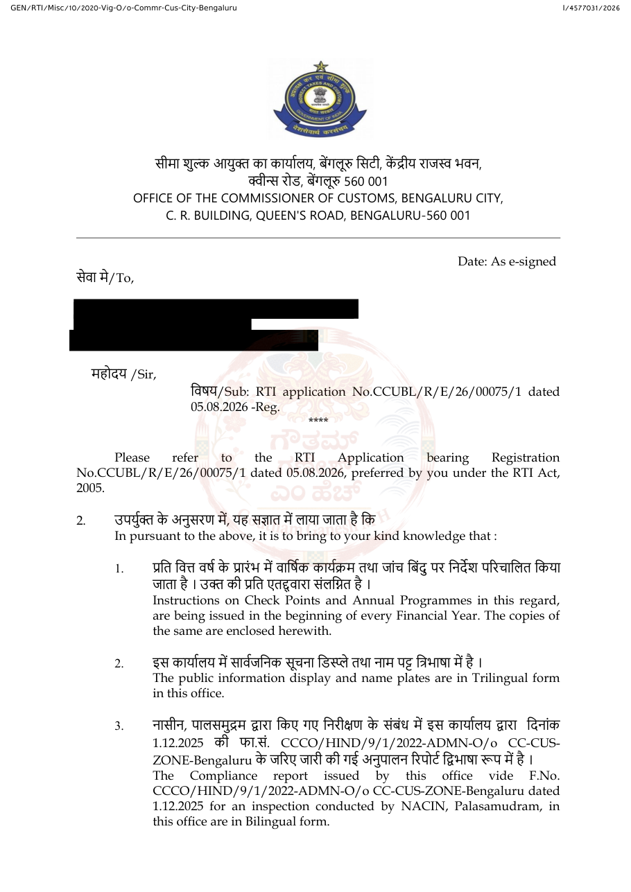
ಇದು Google Translate ಮಾಡಿದ ಯಂತ್ರ ಅನುವಾದ, ಓದಲು ಅನುಕೂಲವಾಗಲೆಂದು ಮಾತ್ರ. ತಪ್ಪುಗಳಿರಬಹುದು. ಅಧಿಕೃತವಾದುದು ಮೂಲ ಹಿಂದಿ ದಾಖಲೆ ಮಾತ್ರ.
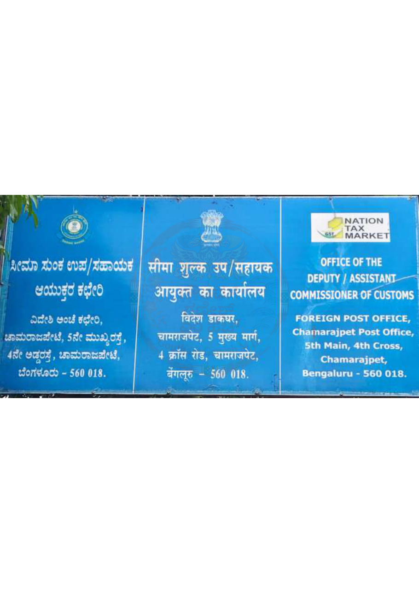
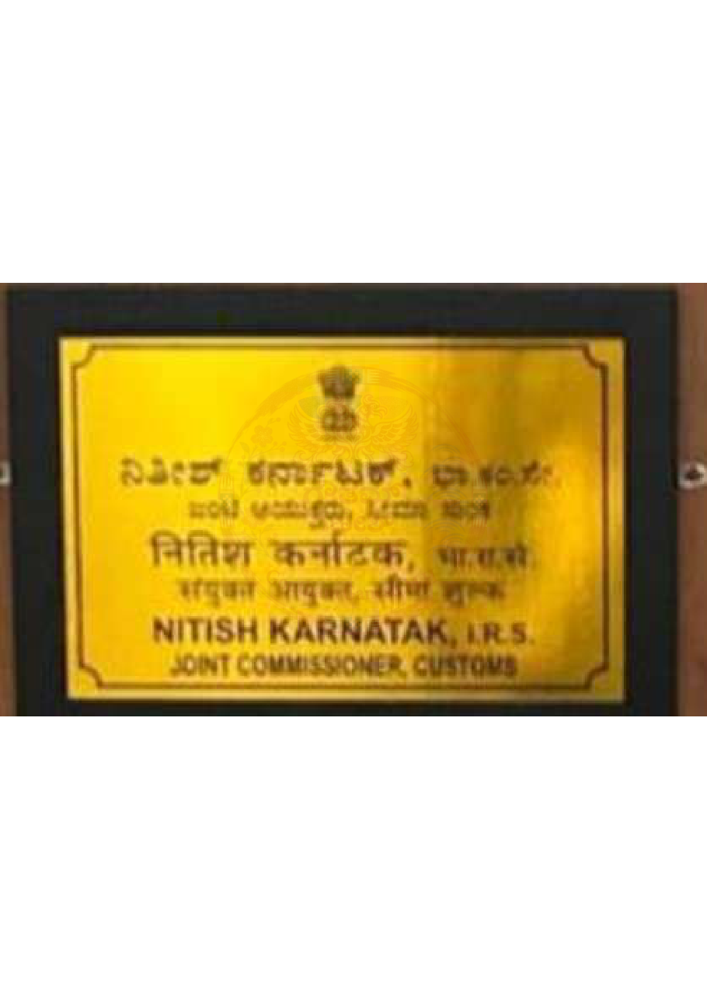
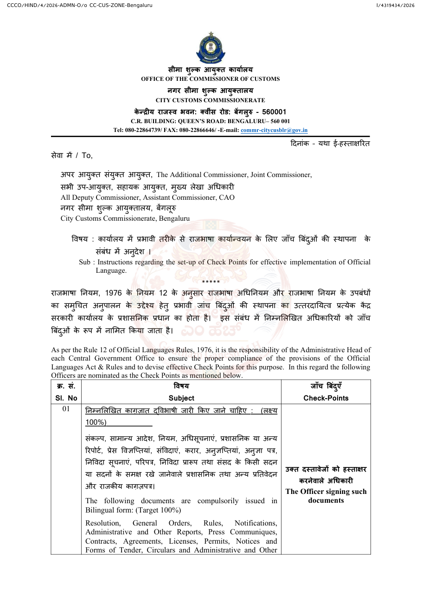
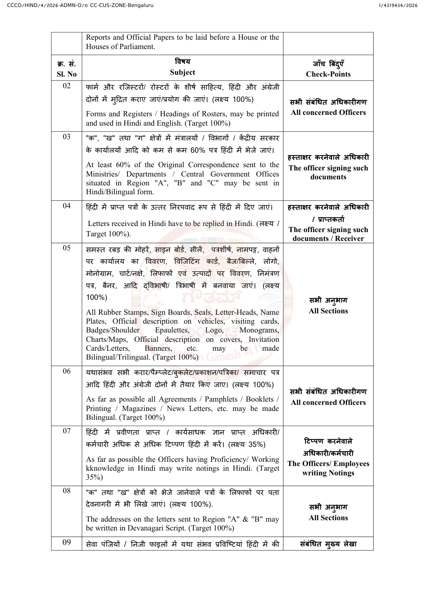
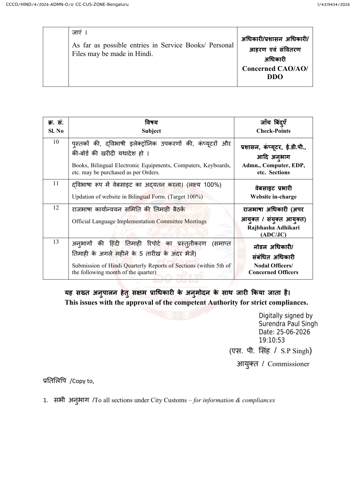
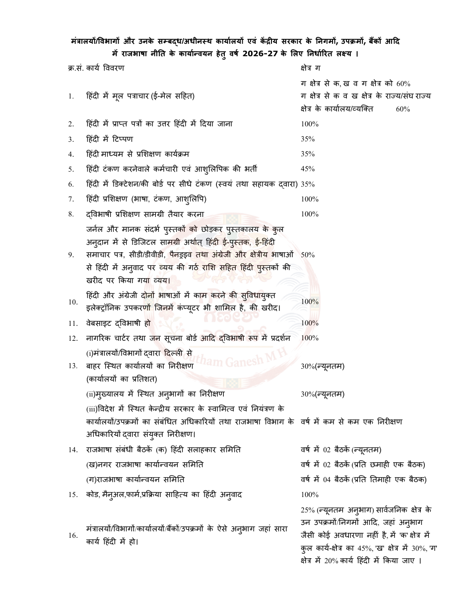
Targets set for the year 2026-27 for the implementation of the Official Language Policy in Ministries/Departments and their attached/subordinate offices and Central Government corporations, undertakings, banks etc.
Sl.No. Job Description - Area C
1. Original correspondence in Hindi (including e-mail): 60% from C region to A, B and C regions; 60% from C region to the office/individual of state/UT of A and B region.
2. Reply to letters received in Hindi: 100%.
3. Comment in Hindi: 35%.
4. Training programs through Hindi medium: 35%.
5. Recruitment of Hindi typing staff and stenographers: 45%.
6. Dictation in Hindi/direct typing on keyboard (by self and assistant): 35%.
7. Hindi Training (Language, Typing, Stenography): 100%.
8. Preparation of bilingual training materials: 100%.
9. Expenditure on purchase of Hindi books including digital content i.e. Hindi e-books, e-Hindi newspapers, CD/DVD, pendrives and the amount spent on translation from English and regional languages into Hindi, out of the total grant of the library excluding journals and standard reference books: 50%.
10. Purchase of electronic equipment including computers capable of working in both Hindi and English languages: 100%.
11. Website should be bilingual: 100%.
12. Display of Citizen's Charter and Public Information Board etc. in bilingual form: 100%.
13. (i) Inspection of offices located outside Delhi by Ministries/Departments (percentage of offices): 30% (minimum). (ii) Inspection of sections located at Headquarters: 30% (minimum). (iii) Joint inspection of offices/undertakings owned and controlled by the Central Government located abroad by the concerned officers and the officers of the Department of Official Language: At least one inspection in a year.
14. Meetings related to Official Language: (a) Hindi Advisory Committee: 02 meetings in a year (minimum). (b) City Official Language Implementation Committee: 02 meetings in a year (one meeting per half year). (c) Official Language Implementation Committee: 04 meetings in a year (one meeting per quarter).
15. Hindi translation of codes, manuals, forms, procedure literature: 100%.
16. Sections of Ministries/Departments/Offices/Banks/Undertakings where all work is in Hindi: 25% (minimum section). In those public sector undertakings/corporations etc., where there is no concept like section, 45% of the total work area in 'A' area, 30% in 'B' area, 20% work in 'C' area should be done in Hindi.
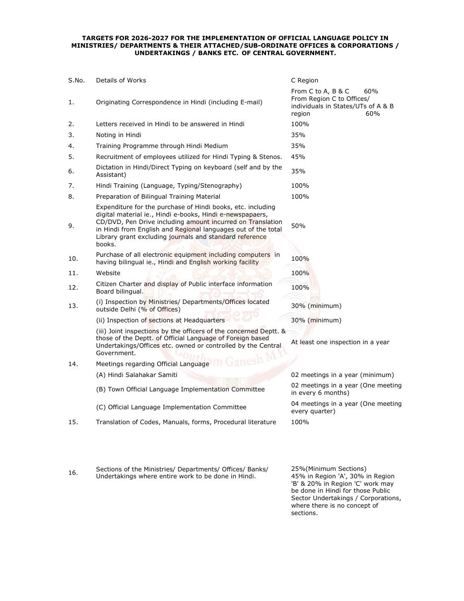


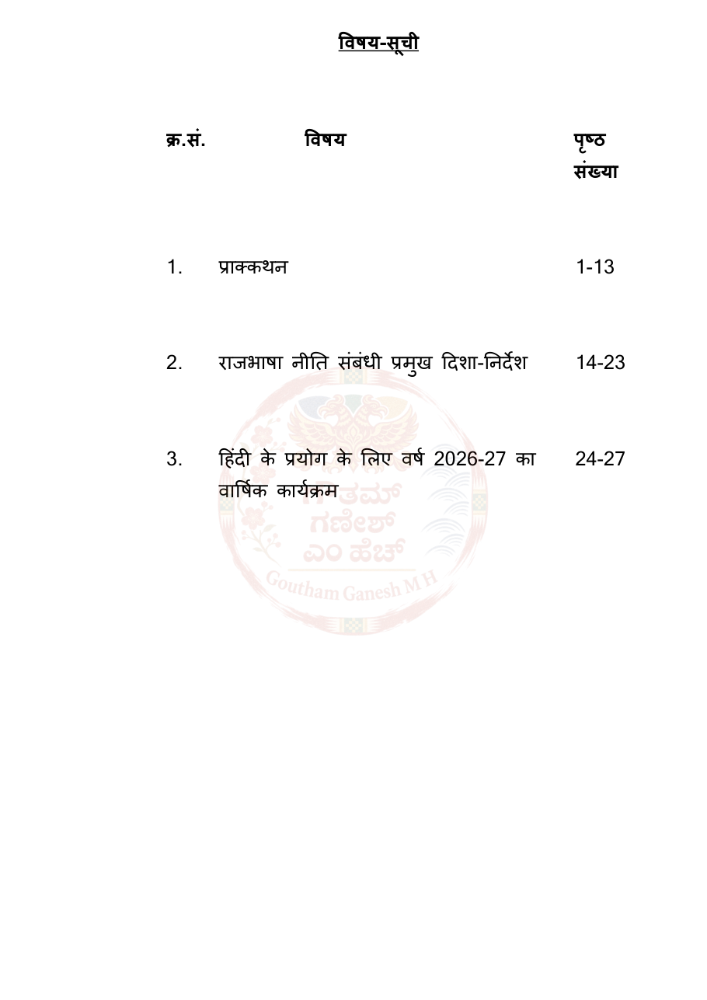
table of contents
Sl.No. - topic - page number
1. Introduction - 1-13
2. Major guidelines related to official language policy - 14-23
3. Annual program for the year 2026-27 for the use of Hindi - 24-27

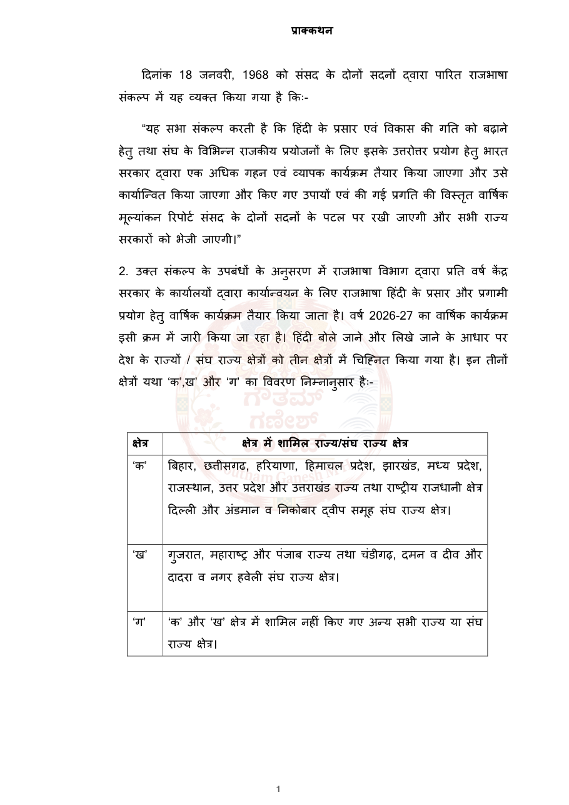
foreword
In the Official Language Resolution passed by both the Houses of Parliament on January 18, 1968, it has been expressed that:-
“That this House resolves that a more intensive and comprehensive program shall be prepared and implemented by the Government of India for accelerating the spread and development of Hindi and for its progressive use for the various official purposes of the Union and that a detailed annual assessment report of the measures taken and the progress made shall be laid on the Table of both Houses of Parliament and sent to all State Governments.”
2. In accordance with the provisions of the above resolution, the Department of Official Language prepares an annual program every year for the propagation and progressive use of the official language Hindi for implementation by the offices of the Central Government. The annual program for the year 2026-27 is being released in this sequence. The states/UTs of the country have been marked into three regions on the basis of how Hindi is spoken and written. The details of these three areas i.e. 'A', 'B' and 'C' are as follows:-
Region 'A': States of Bihar, Chhattisgarh, Haryana, Himachal Pradesh, Jharkhand, Madhya Pradesh, Rajasthan, Uttar Pradesh and Uttarakhand and National Capital Territory of Delhi and Union Territory of Andaman and Nicobar Islands.
Region 'B': States of Gujarat, Maharashtra and Punjab and Union Territories of Chandigarh, Daman and Diu and Dadra and Nagar Haveli.
Region 'C': All other States or Union territories not included in Regions 'A' and 'B'.


3. The use of Hindi is increasing gradually in government offices but still a lot of work is being done in English. The objective of the Official Language Policy is to ensure maximum use of Hindi in government work. This would be in accordance with the basic spirit of the Indian Constitution. Needless to say, conducting government work in the language of common people will speed up the pace of development and bring transparency in administration. 4. Under the able and inspiring leadership of Honorable Prime Minister Shri Narendra Modi and Honorable Home Minister Shri Amit Shah, the Department of Official Language has started the following e-learning activities: - (a) Training Institute of the Department of Official Language – Central Hindi Training Institute has also started imparting training in Hindi language/Hindi typing/Hindi shorthand through electronic platforms (e-training) as per requirement. (b) Regional Implementation Offices of the Department of Official Language have also started conducting virtual inspections through digital platforms (e-inspection) as per requirement. (c) Hindi workshops and meetings of the City Official Language Implementation Committee (NARCAS) are also being organized through the means of information and communication technology (e-meetings). (d) For easy and accessible reading of in-house magazines of various organizations of the Central Government, e-magazine library platform has been started on the official website of the Department of Official Language www.rajbhasha.gov.in. 5. Official Language Department organizes Golden Jubilee Celebration:
To commemorate the completion of 50 years of establishment of the Department of Official Language, Ministry of Home Affairs, a grand celebration of “Golden Jubilee Celebration of the Department of Official Language” was organized at Bharat Mandapam, New Delhi on 26 June, 2025. The objective of this function was to promote Hindi and other Indian languages under the Official Language Policy and to highlight the achievements of the Department of Official Language in the last fifty years.
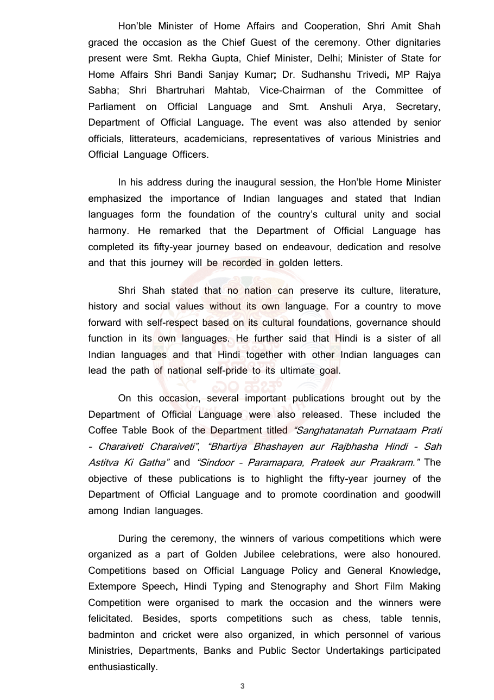

The chief guest of the function was Honorable Union Home and Cooperation Minister Shri Amit Shah. Delhi Chief Minister Smt. Rekha Gupta, Union Minister of State for Home Shri Bandi Sanjay Kumar, Rajya Sabha MP Dr. Sudhanshu Trivedi, Vice Chairman of Parliamentary Official Language Committee Shri Bhartrihari Mahtab and Secretary of the Official Language Department Smt. Anshuli Arya were present in the program. Many senior officers, litterateurs, educationists and representatives of various ministries and official language officers were present in the program.
In his address at the inaugural session, the Honorable Home Minister stressed the importance of Indian languages and said that Indian languages are the cornerstone of the country's cultural unity and social harmony. He said that on the basis of struggle, sadhana and determination, the Department of Official Language has decided on the journey of these 50 years and this journey will be inscribed in golden letters.
Shri Shah said that no country can keep its culture, literature, history and social values alive without its language. To move forward with self-respect on the basis of its culture, the country should be governed in its own languages. He said that Hindi is a friend of all Indian languages and only Hindi and Indian languages together can take the program of upliftment of our self-respect to the final goal.
On this occasion, various important publications published by the Department of Official Language were also released. These included the coffee table books of the Department of Official Language - 'Sanghtan: Purnatam Prati Charaiveti Charaiveti', Indian Languages and Official Language Hindi - Saga of Co-existence' and 'Sindoor - Tradition, Symbol and Valor'. The objective of these publications is to throw light on the journey of 50 years of the establishment of the Department of Official Language and to promote mutual coordination and goodwill among Indian languages.
The winners of various competitions held during the Golden Jubilee year were also honored at the function. In these, awards were given to the winners of competitions like Official Language Policy and General Knowledge Competition, Shorthand Competition, Hindi Typing and Stenography Competition and Short Film Making Competition. On the occasion of the Golden Jubilee celebrations of the Official Language, chess, table tennis, badminton and cricket competitions were also organized in which personnel from various ministries, departments, banks and undertakings participated enthusiastically.

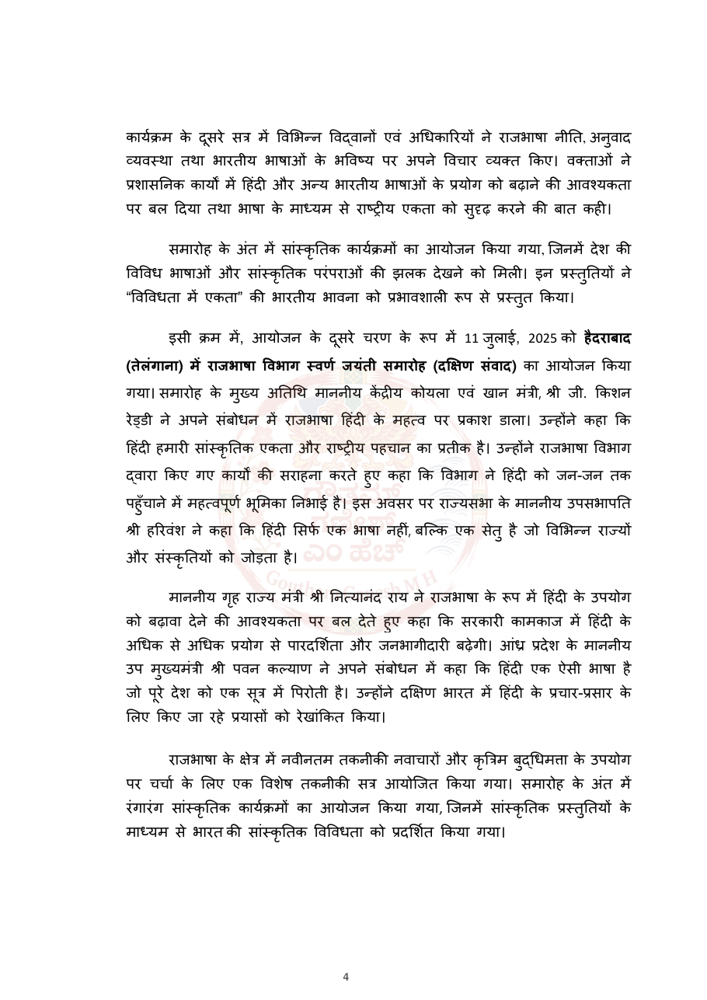
In the second session of the program, various scholars and officials expressed their views on the official language policy, translation system and the future of Indian languages. Speakers stressed the need to increase the use of Hindi and other Indian languages in administrative work and talked about strengthening national unity through language.
At the end of the ceremony, cultural programs were organized in which the diverse languages and cultural traditions of the country were seen. These presentations effectively presented the Indian spirit of “Unity in Diversity”.
In this sequence, the Golden Jubilee Celebration of the Department of Official Language (Dakshin Samvad) was organized in Hyderabad (Telangana) on July 11, 2025 as the second phase of the event. The chief guest of the ceremony was Honorable Union Minister of Coal and Mines, Shri G. Kishan Reddy in his address highlighted the importance of the official language Hindi. He said that Hindi is a symbol of our cultural unity and national identity. Praising the work done by the Official Language Department, he said that the department has played an important role in making Hindi accessible to the people. On this occasion, Honorable Deputy Chairman of Rajya Sabha Shri Harivansh said that Hindi is not just a language but a bridge that connects different states and cultures.
Hon'ble Minister of State for Home Shri Nityanand Rai, while emphasizing the need to promote the use of Hindi as the official language, said that greater use of Hindi in government work will increase transparency and public participation. Honorable Deputy Chief Minister of Andhra Pradesh, Shri Pawan Kalyan in his address said that Hindi is a language that unites the entire country. He underlined the efforts being made for the promotion of Hindi in South India.
A special technical session was organized to discuss the latest technological innovations and use of Artificial Intelligence in the field of Official Language. At the end of the ceremony, colorful cultural programs were organized in which the cultural diversity of India was showcased through cultural presentations.

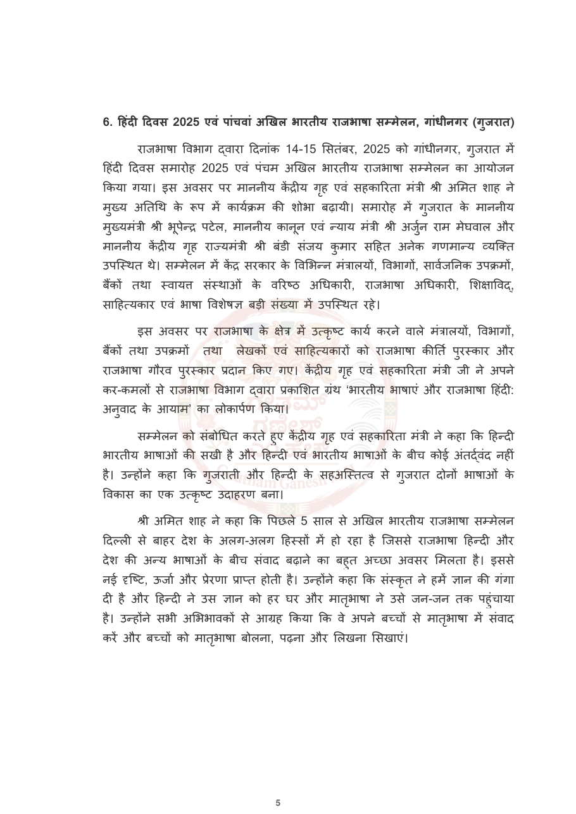
6. Hindi Day 2025 and Fifth All India Official Language Conference, Gandhinagar (Gujarat)
Hindi Day Celebration 2025 and Fifth All India Official Language Conference was organized by the Department of Official Language on 14-15 September, 2025 in Gandhinagar, Gujarat. On this occasion, Honorable Union Home and Cooperation Minister Shri Amit Shah graced the program as the chief guest. Many dignitaries including Honorable Chief Minister of Gujarat Shri Bhupendra Patel, Honorable Minister of Law and Justice Shri Arjun Ram Meghwal and Honorable Union Minister of State for Home Shri Bandi Sanjay Kumar were present at the ceremony. A large number of senior officials, official language officers, educationists, litterateurs and language experts from various ministries, departments, public undertakings, banks and autonomous institutions of the Central Government were present in the conference.
On this occasion, Rajbhasha Kirti Award and Rajbhasha Gaurav Award were given to ministries, departments, banks and enterprises and writers and litterateurs who have done excellent work in the field of official language. The Union Home and Cooperation Minister inaugurated the book 'Indian Languages and Official Language Hindi: Dimensions of Translation' published by the Department of Official Language.
Addressing the conference, the Union Home and Cooperation Minister said that Hindi is a friend of Indian languages and there is no conflict between Hindi and Indian languages. He said that the coexistence of Gujarati and Hindi made Gujarat an excellent example of the development of both the languages.
Shri Amit Shah said that for the last 5 years, All India Official Language Conference is being held outside Delhi in different parts of the country, which provides a very good opportunity to increase communication between the official language Hindi and other languages of the country. This provides new vision, energy and inspiration. He said that Sanskrit has given us Ganga of knowledge and Hindi has taken that knowledge to every home and mother tongue to every person. He urged all the parents to communicate with their children in their mother tongue and teach their children to speak, read and write their mother tongue.
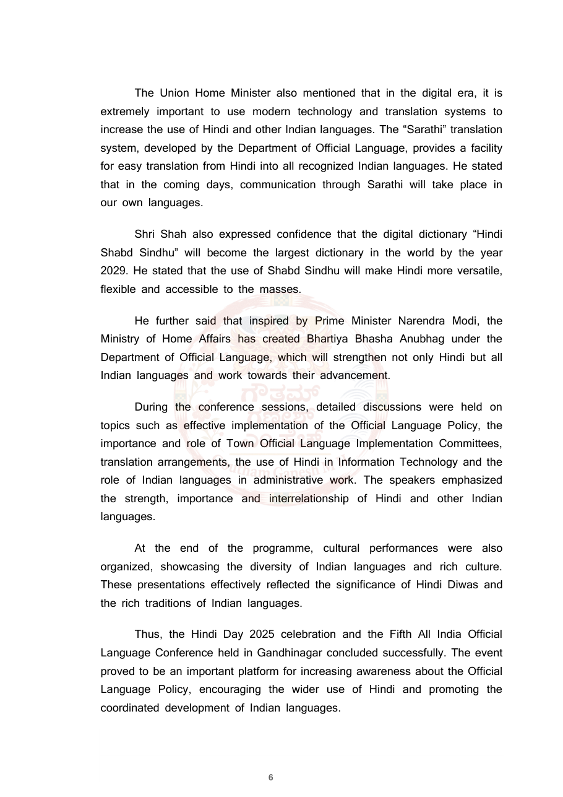
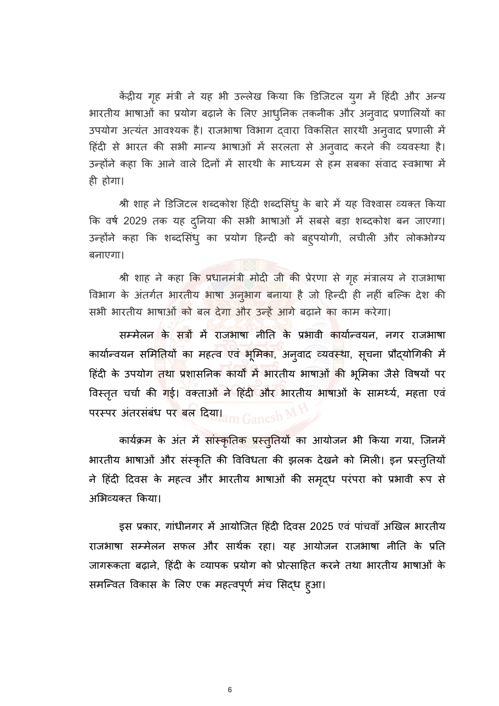
The Union Home Minister also mentioned that the use of modern technology and translation systems is extremely important to increase the use of Hindi and other Indian languages in the digital age. Sarathi translation system developed by the Department of Official Language has a system for easy translation from Hindi to all the recognized languages of India. He said that in the coming days, all of us will communicate in our own language through Sarathi.
Shri Shah expressed confidence about the digital dictionary Hindi Shabdsindhu that by the year 2029 it will become the largest dictionary among all the languages of the world. He said that the use of word Sindhu will make Hindi versatile, flexible and popular.
Shri Shah said that with the inspiration of Prime Minister Modi ji, the Home Ministry has created an Indian Language Section under the Department of Official Language, which will strengthen not only Hindi but all the Indian languages of the country and will work to promote them.
In the sessions of the conference, topics like effective implementation of the official language policy, importance and role of city official language implementation committees, translation system, use of Hindi in information technology and role of Indian languages in administrative work were discussed in detail. The speakers emphasized the strength, importance and interrelationship of Hindi and Indian languages.
At the end of the program, cultural presentations were also organized in which the diversity of Indian languages and culture was visible. These presentations effectively expressed the importance of Hindi Diwas and the rich tradition of Indian languages.
Thus, Hindi Day 2025 and the fifth All India Official Language Conference held in Gandhinagar was successful and meaningful. This event proved to be an important platform for increasing awareness about the official language policy, encouraging widespread use of Hindi and coordinated development of Indian languages.
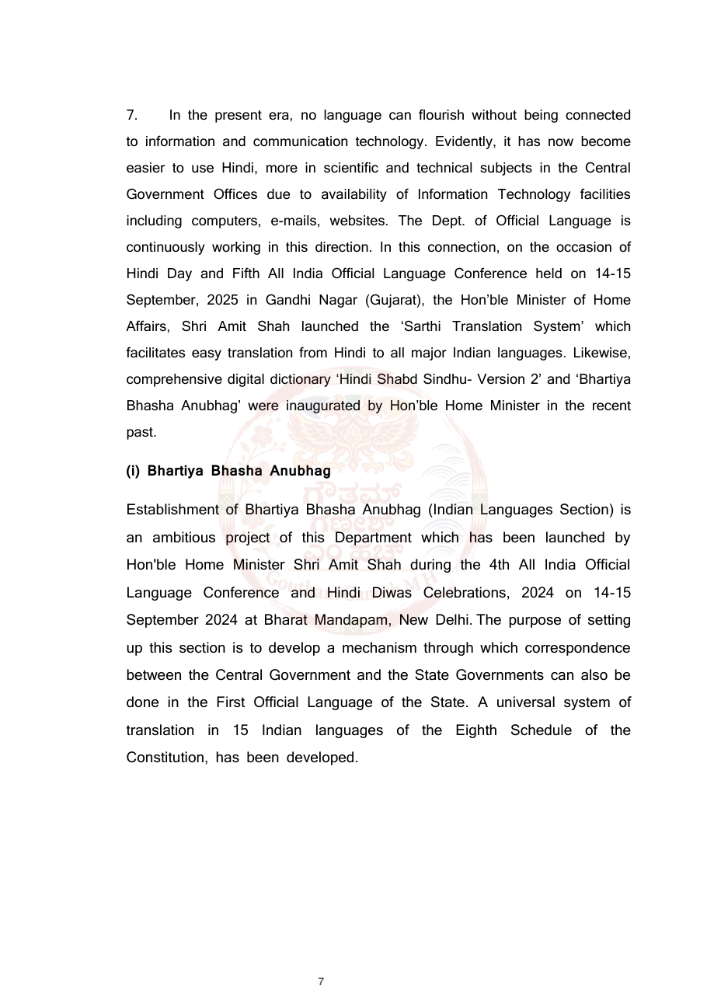
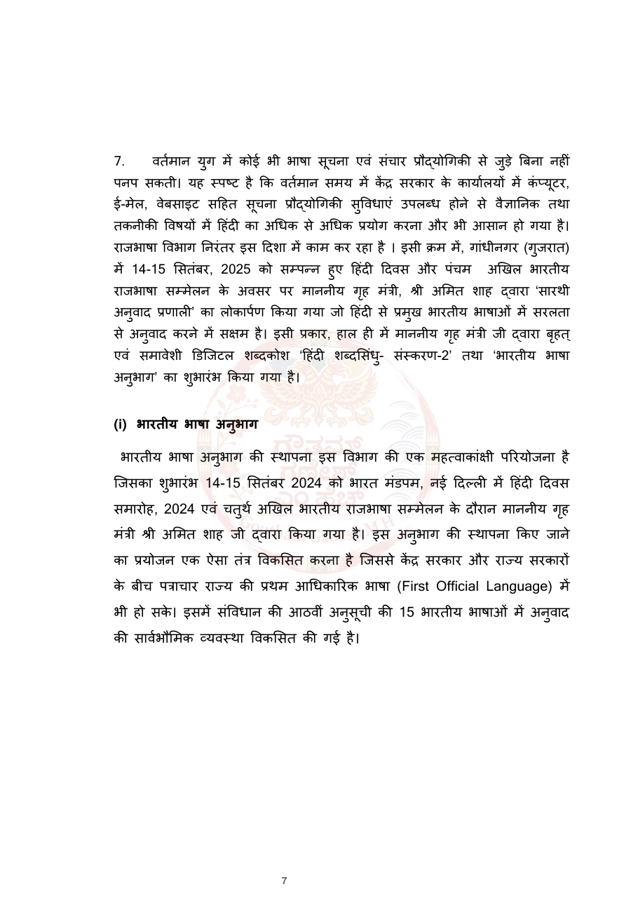
7. In the present era, no language can flourish without being connected to information and communication technology. It is clear that at present, with the availability of information technology facilities including computers, e-mail, websites in the central government offices, it has become easier to use Hindi more and more in scientific and technical subjects. The Official Language Department is continuously working in this direction. In this sequence, on the occasion of Hindi Diwas and Fifth All India Official Language Conference held on 14-15 September, 2025 in Gandhinagar (Gujarat), the 'Sarthi Translation System' was launched by the Honorable Home Minister, Shri Amit Shah, which is capable of easily translating from Hindi to major Indian languages. Similarly, recently, a large and inclusive digital dictionary 'Hindi Shabdsindhu - Version-2' and 'Indian Language Section' has been launched by the Honorable Home Minister.
(i) Indian Language Section
Establishment of the Indian Language Section is an ambitious project of this department which has been launched by the Honorable Home Minister Shri Amit Shah during the Hindi Day Celebrations, 2024 and the Fourth All India Official Language Conference on 14-15 September 2024 at Bharat Mandapam, New Delhi. The purpose of setting up this section is to develop a mechanism by which correspondence between the Central Government and the State Governments can be done in the first official language of the state. In this, a universal system of translation of the Eighth Schedule of the Constitution into 15 Indian languages has been developed.
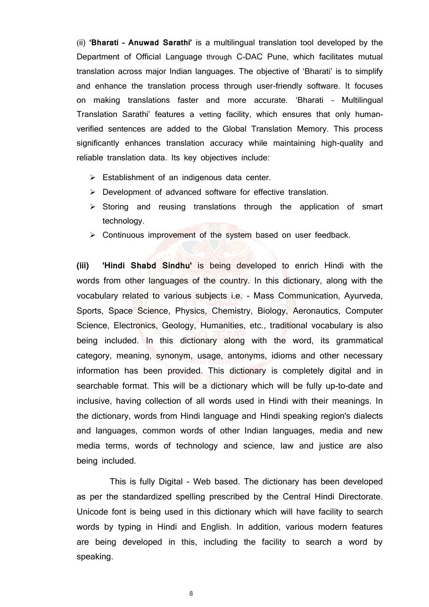
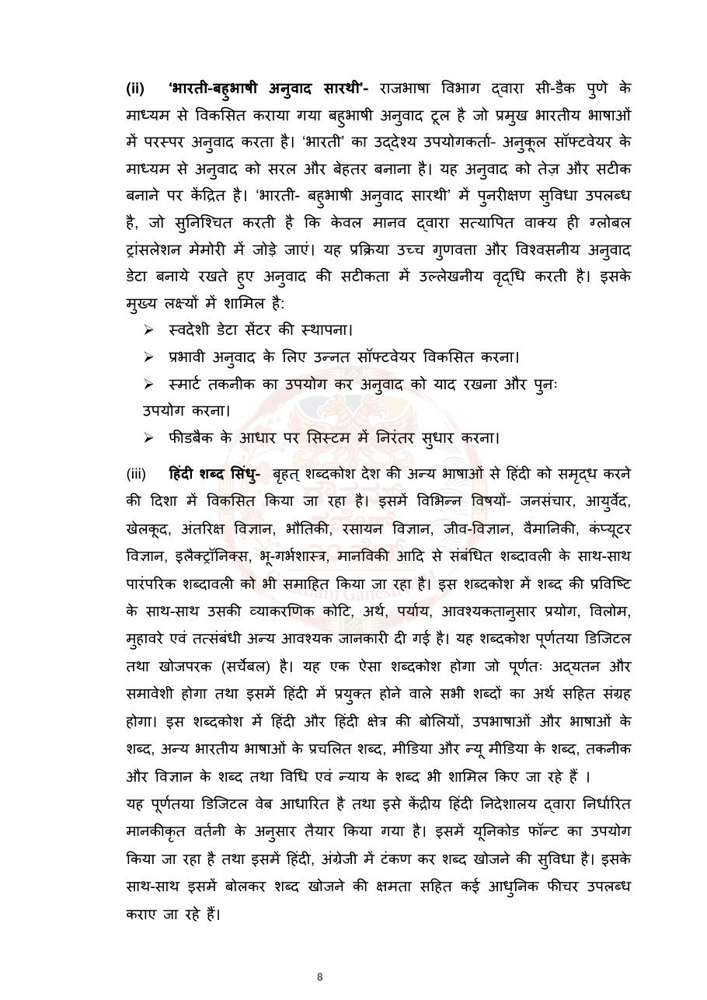
(ii) 'Bharti-Multilingual Translation Sarathi' - is a multilingual translation tool developed by the Department of Official Language through C-DAC Pune which provides mutual translation into major Indian languages. 'Bharti' aims to simplify and improve translation through user-friendly software. It focuses on making translation fast and accurate. 'Bharti - Multilingual Translation Sarathi' has a vetting feature, which ensures that only human-verified sentences are added to the global translation memory. This process significantly increases translation accuracy while maintaining high quality and reliable translation data. Its main goals include:
> Establishment of indigenous data centre.
> Developing advanced software for effective translation.
> Remembering and reusing translations using smart technology.
> To continuously improve the system based on feedback.
(iii) Hindi word Sindhu-Brihat Dictionary is being developed in the direction of enriching Hindi from other languages of the country. In this, along with terminology related to various subjects - mass communication, Ayurveda, sports, space science, physics, chemistry, biology, aeronautics, computer science, electronics, geology, humanities etc., traditional terminology is also being included. In this dictionary, along with the entry of the word, its grammatical category, meaning, synonym, usage as per requirement, antonyms, idioms and other necessary information is given. This dictionary is completely digital and searchable. This will be a dictionary which will be completely updated and inclusive and will contain a collection of all the words used in Hindi along with their meanings. In this dictionary, words of dialects, dialects and languages of Hindi and Hindi region, popular words of other Indian languages, words of media and new media, words of technology and science and words of law and justice are also being included. It is completely digital web based and has been prepared as per the standardized spelling prescribed by the Central Hindi Directorate. Unicode font is being used in it and it has the facility to search words by typing in Hindi and English. Along with this, many modern features are being provided in it including the ability to search words by speaking.

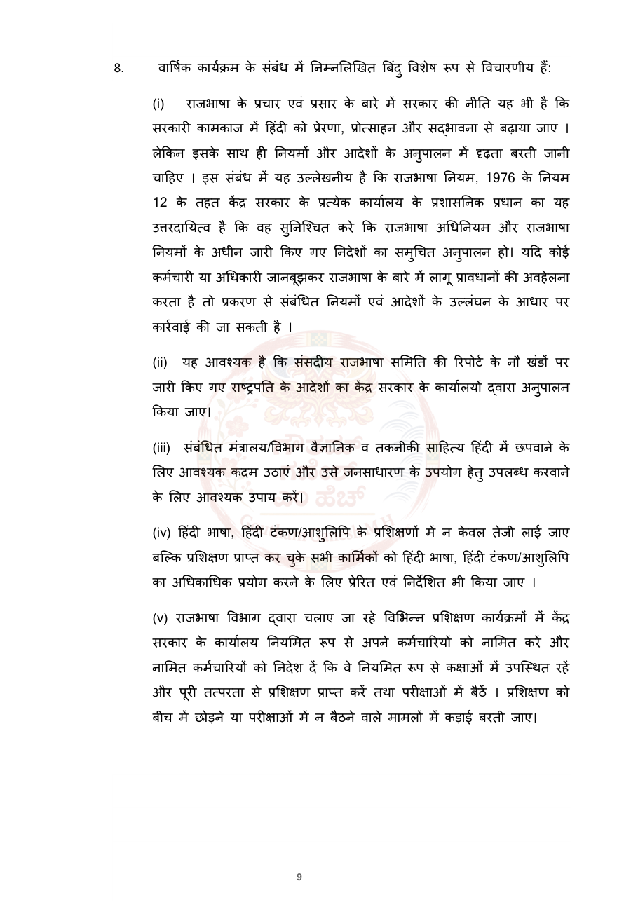
8. The following points are particularly worth considering in connection with the Annual Programme:
(i) The government's policy regarding the promotion and spread of the official language is that Hindi should be promoted in government work through inspiration, encouragement and goodwill. But at the same time, strictness should be exercised in following the rules and orders. In this regard, it is noteworthy that under Rule 12 of the Official Language Rules, 1976, it is the responsibility of the administrative head of every office of the Central Government to ensure that the instructions issued under the Official Language Act and Official Language Rules are properly complied with. If any employee or officer deliberately disregards the provisions applicable regarding the official language, then action can be taken on the basis of violation of rules and orders related to the matter.
(ii) It is necessary that the orders of the President issued on the nine volumes of the Report of the Parliamentary Committee on Official Language are complied with by the Central Government offices.
(iii) The concerned Ministry/Department should take necessary steps to get scientific and technical literature printed in Hindi and take necessary measures to make it available for the use of the general public.
(iv) Not only should the training in Hindi language and Hindi typing/stenography be expedited, but all the personnel who have received the training should also be motivated and directed to use Hindi language and Hindi typing/stenography as much as possible.
(v) Central Government offices should regularly nominate their employees in the various training programs run by the Department of Official Language and direct the nominated employees to attend the classes regularly and receive training with full diligence and appear in the examinations. Strict action should be taken in cases of leaving training midway or not appearing in examinations.
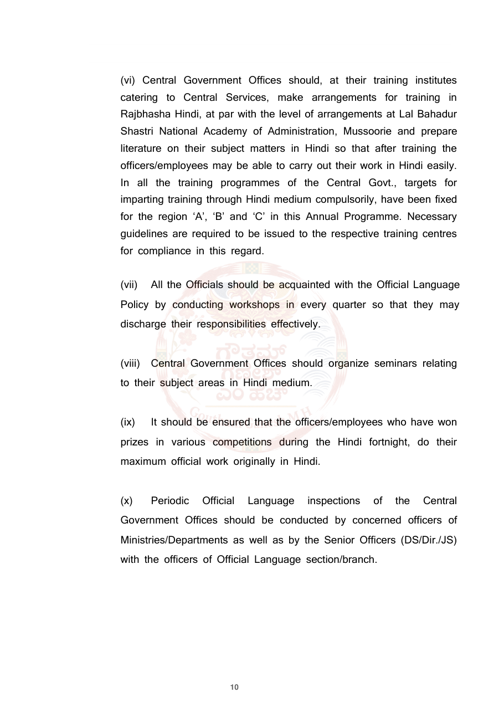
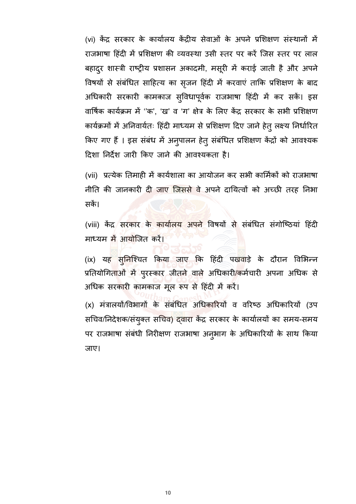
(vi) Central Government offices should make arrangements for training in the official language Hindi in their training institutes of central services at the same level as is conducted in the Lal Bahadur Shastri National Academy of Administration, Mussoorie and get literature related to their subjects created in Hindi so that after the training, the officers can conveniently do the official work in the official language Hindi. In this annual program, targets have been set to provide training through Hindi medium compulsorily in all the training programs of the Central Government for regions 'A', 'B' and 'C'. In this regard, necessary guidelines need to be issued to the concerned training centers for compliance.
(vii) By organizing workshops every quarter, all the employees should be given information about the official language policy so that they can perform their responsibilities well.
(viii) Central Government offices should organize seminars related to their subjects in Hindi medium.
(ix) It should be ensured that officers/employees who win awards in various competitions during Hindi Fortnight do as much of their official work as possible in Hindi.
(x) Official language related inspection of the Central Government offices should be done from time to time by the concerned officers and senior officers (Deputy Secretary/Director/Joint Secretary) of the Ministries/Departments along with the officials of the Official Language Section.
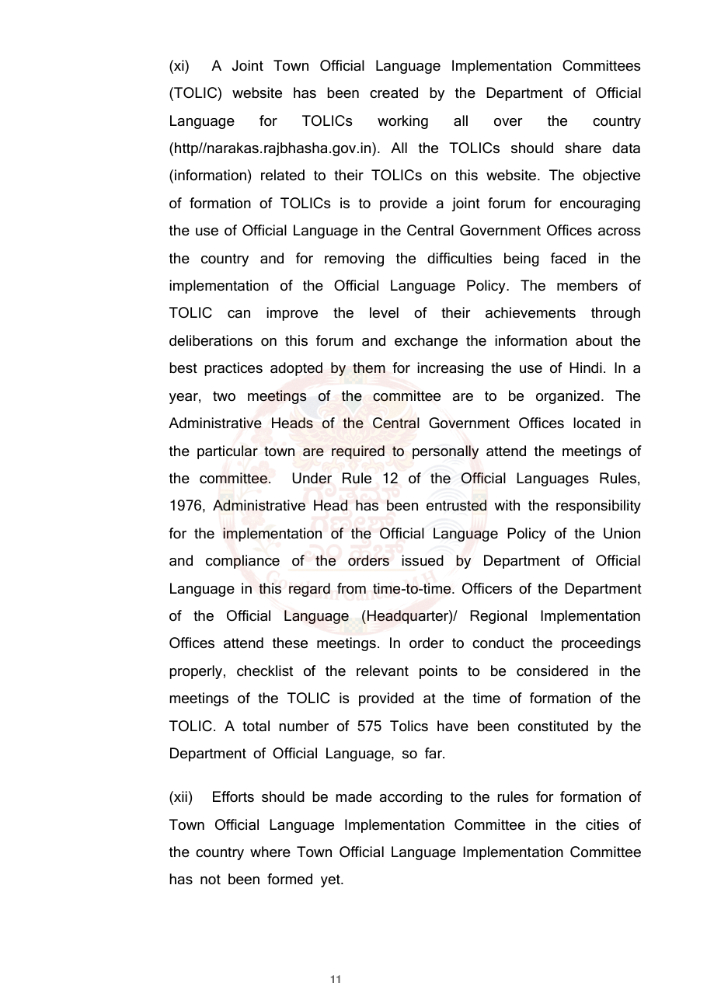

(xi) A joint Narakas website (http//narakas.rajbhasha.gov.in) has been created by the Department of Official Language for the Town Official Language Implementation Committees (Narakas) functioning across the country. All Narakas should share their Narakas related data (information) on this website. The purpose of constituting the Town Official Language Implementation Committees is to provide a joint platform to promote the use of the official language in the offices of the Central Government spread across the country and to remove the difficulties in the implementation of the Official Language Policy. On this platform, Narakas members can improve the level of their achievements by discussing and exchanging information about the best policies adopted by them to increase the use of Hindi. Two meetings of the committee are held in a year. The administrative heads of the Central Government offices located in a particular city are expected to personally participate in the meetings of this committee. By Rule 12 of the Official Language Rules, 1976, administrative heads have been entrusted with the responsibility of implementation of the Official Language Policy and compliance with the orders issued by the Department of Official Language from time to time in this regard. Officials from the Department of Official Language (HQ)/regional implementing offices participate in these meetings. A check list of points for consideration in the meetings of NAARC is provided to ensure necessary action at the time of formation of NAARC. A total of 575 Narakas have been formed so far by the Department of Official Language.
(xii) Efforts should be made as per the rules for formation of Narakas in those cities of the country where Narakas have not been formed yet.
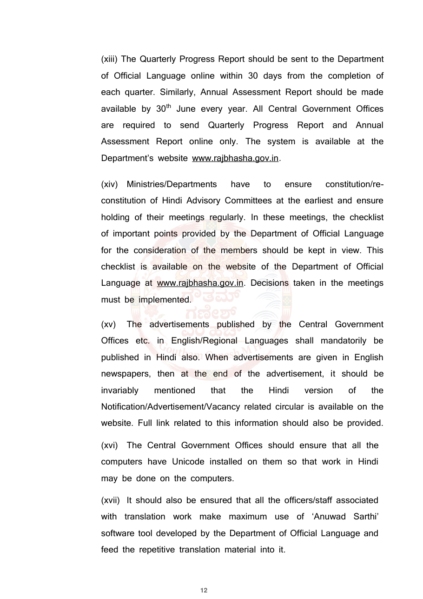

(xiii) Quarterly progress report should be made available online to the Department of Official Language within 30 days of the end of each quarter. Similarly, the annual evaluation report must be made available by June 30 every year. All Central Government offices are expected to send quarterly progress reports and annual evaluation reports online only. This system is available on the department's website www.rajbhasha.gov.in.
(xiv) Ministries/Departments should constitute/re-constitute Hindi Advisory Committees and ensure that they hold their meetings on a regular basis. In these meetings, the check list of important points given by the Department of Official Language should be kept in mind for the consideration of the honorable members. This check list is available on the website of the Department of Official Language www.rajbhasha.gov.in. Compliance with the decisions taken in these meetings should be ensured.
(xv) Whatever advertisements are given by Central Government offices etc. in English/regional languages, they should be compulsorily published in Hindi language also. When advertisements are given in English newspapers, it must be mentioned at the end of the advertisement that the Hindi version of the notification/advertisement/vacancy circular is available on the website. The complete link related to this information should also be given.
(xvi) Central Government offices should ensure that all computers have Unicode facility so that work can be done in Hindi on them.
(xvii) It should also be ensured that all the officers/employees associated with translation work make maximum use of the 'Bharti: Multilingual Translation Sarathi' tool developed by the Department of Official Language and feed the repetitive tasks into it.
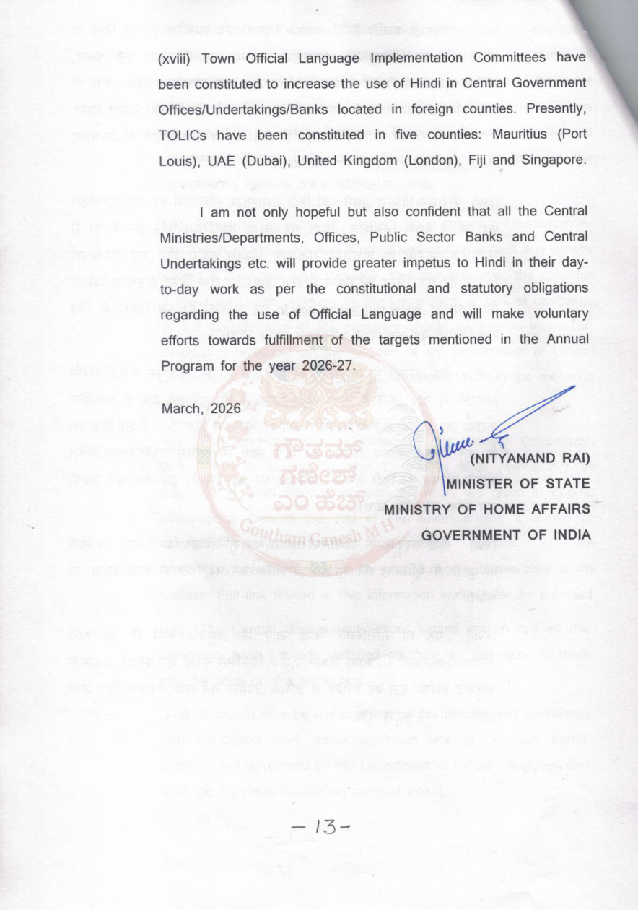
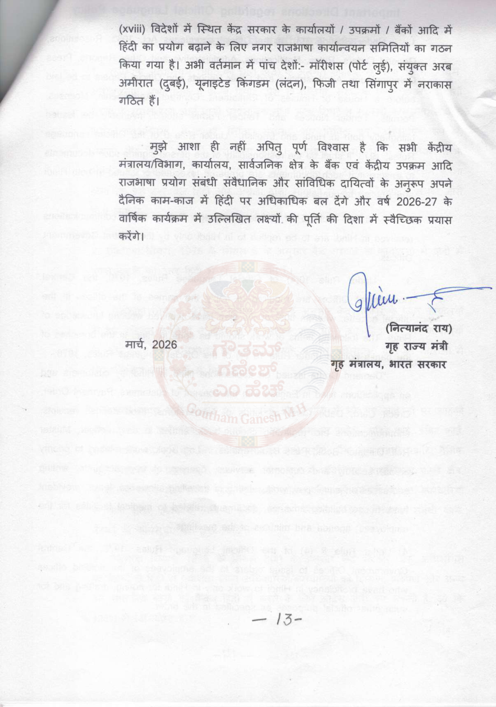
(xviii) City Official Language Implementation Committees have been formed to increase the use of Hindi in Central Government offices/undertakings/banks etc. located abroad. At present NARACAS are formed in five countries: Mauritius (Port Louis), United Arab Emirates (Dubai), United Kingdom (London), Fiji and Singapore.
I not only hope but have full confidence that all the Central Ministries/Departments, Offices, Public Sector Banks and Central Undertakings etc. will give maximum emphasis on Hindi in their daily work in accordance with the constitutional and statutory responsibilities related to the use of the official language and will make voluntary efforts towards achieving the goals mentioned in the annual program for the year 2026-27.
March, 2026
(Nityanand Rai) Minister of State for Home Affairs, Ministry of Home Affairs, Government of India
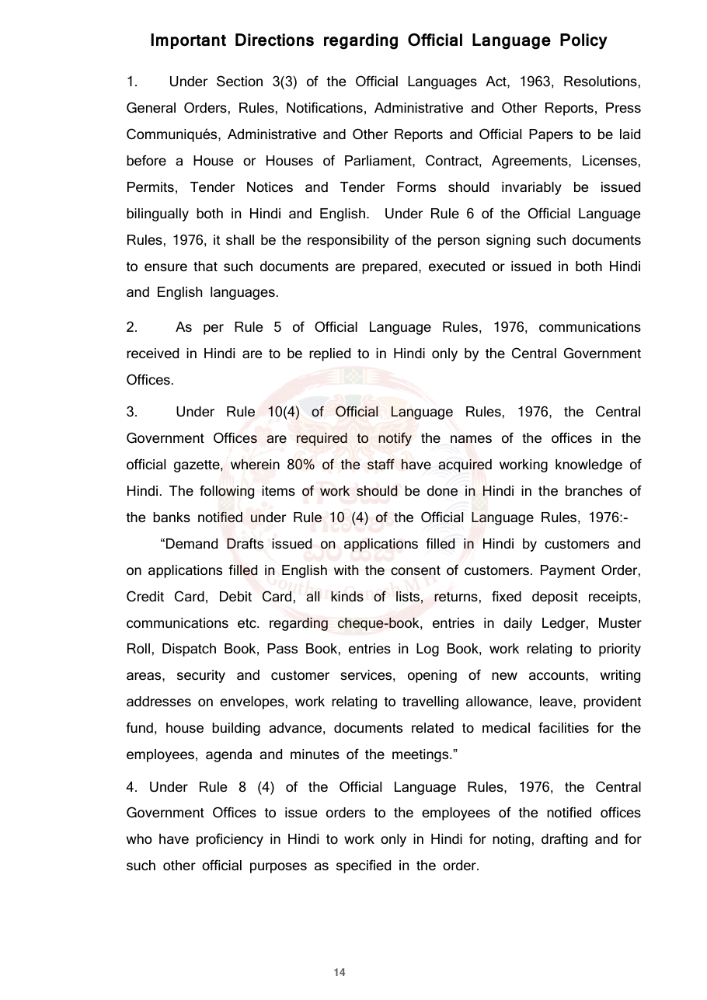
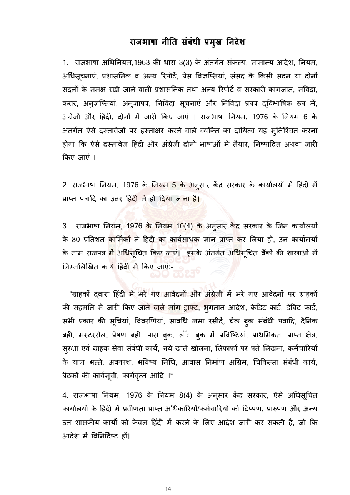
Major instructions related to official language policy
1. Under Section 3(3) of the Official Language Act, 1963, resolutions, general orders, rules, notifications, administrative and other reports, press releases, administrative and other reports to be placed before either or both Houses of Parliament and government documents, contracts, agreements, licenses, permits, tender notices and tender forms should be issued bilingually, in both English and Hindi. Under Rule 6 of the Official Language Rules, 1976, it will be the responsibility of the person signing such documents to ensure that such documents are prepared, executed or issued in both Hindi and English languages.
2. According to Rule 5 of the Official Language Rules, 1976, replies to letters etc. received in Hindi in Central Government offices are to be given in Hindi only.
3. According to Rule 10(4) of the Official Language Rules, 976, the names of the Central Government offices where 80 percent of the employees have acquired working knowledge of Hindi should be notified in the Gazette. Under this, the following work should be done in Hindi in the branches of notified banks:-
"Demand drafts, payment orders, credit cards, debit cards, all types of lists, statements, fixed deposit receipts, check book related correspondence, day books, muster rolls, remittance books, pass books, entries in log books, priority areas, security and customer service related functions, opening of new accounts, writing of addresses on envelopes, traveling allowances of employees, issued with the consent of the customers on applications filled in by the customers in Hindi and applications filled in English, Leave, provident fund, housing construction advance, medical related work, agenda of meetings, minutes etc.
4. According to Rule 8(4) of the Official Language Rules, 1976, the Central Government can issue orders to the Hindi proficient officers/employees of such notified offices to do noting, drafting and other official work only in Hindi, as may be specified in the order.
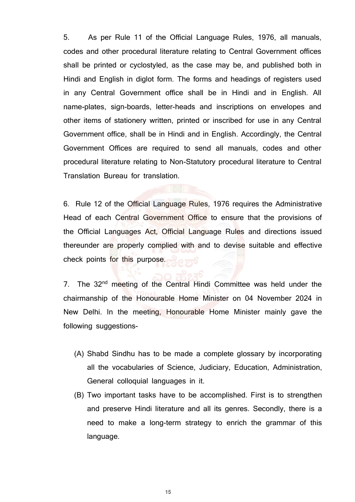
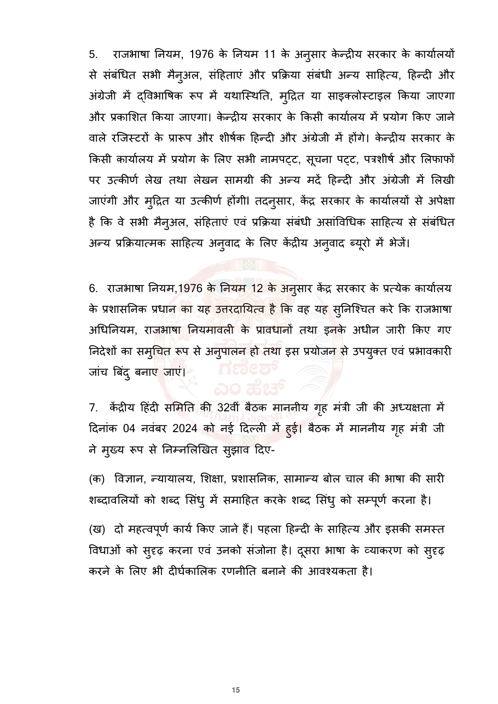
5. As per Rule 11 of the Official Language Rules, 1976, all manuals, codes and other procedural literature relating to the offices of the Central Government shall be printed or cyclostyled, as the case may be, in bilingual form in Hindi and English and published. The forms and titles of the registers used in any office of the Central Government shall be in Hindi and English. All name plates, notice boards, letter heads and inscriptions on envelopes and other items of stationery for use in any office of the Central Government shall be written and printed or engraved in Hindi and English. Accordingly, Central Government offices are required to send all manuals, codes and other procedural literature relating to non-statutory procedural literature to the Central Translation Bureau for translation.
6. According to Rule 12 of the Official Language Rules, 1976, it is the responsibility of the administrative head of every office of the Central Government to ensure that the provisions of the Official Language Act, Official Language Rules and the instructions issued under them are properly complied with and for this purpose, suitable and effective check points are created.
7. The 32nd meeting of the Central Hindi Committee was held under the chairmanship of the Honorable Home Minister on 04 November 2024 in New Delhi. In the meeting, the Honorable Home Minister mainly gave the following suggestions - (a) The word Sindhu has to be made complete by including all the terminology of science, court, education, administrative and common colloquial language in the word Sindhu. (b) Two important tasks have to be done. The first is to strengthen and cherish Hindi literature and all its genres. Secondly, there is a need to make a long term strategy to strengthen the grammar of the language.
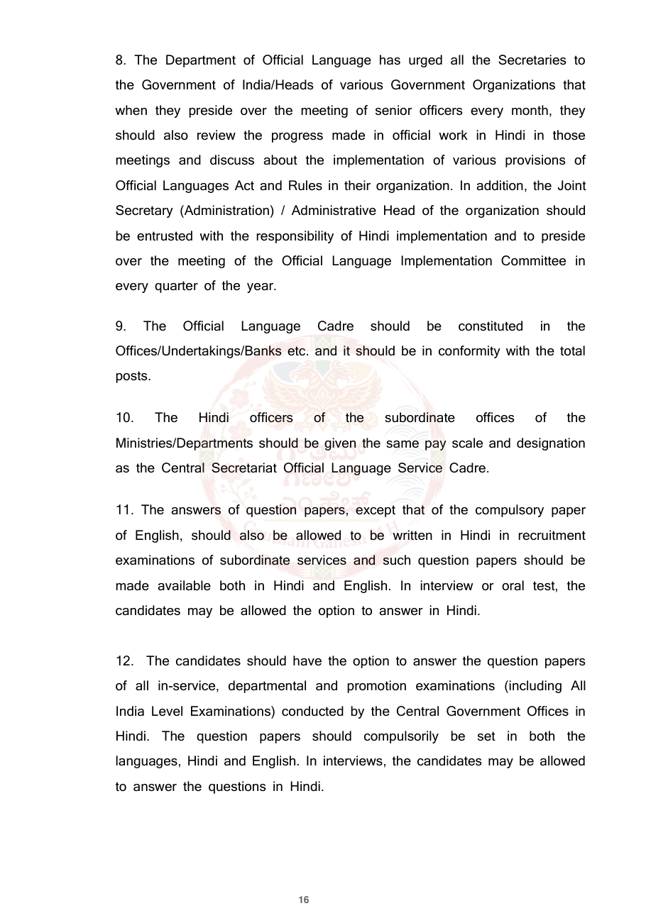
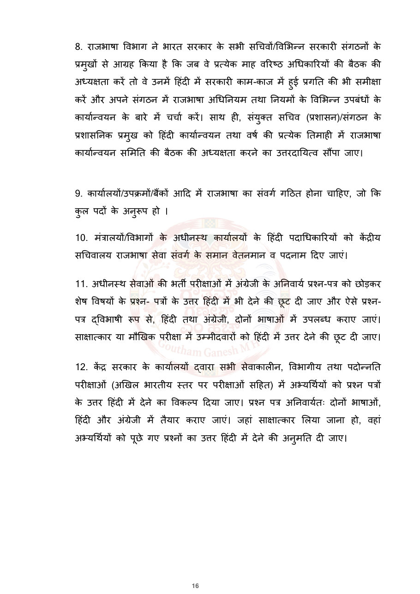
8. The Department of Official Language has requested all the Secretaries of the Government of India/Heads of various Government organizations that when they chair the meetings of senior officers every month, they should also review the progress made in official work in Hindi and discuss about the implementation of various provisions of the Official Languages Act and Rules in their organization. Also, the Joint Secretary (Administration)/Administrative Head of the organization should be entrusted with the responsibility of implementing Hindi and presiding over the meeting of the Official Language Implementation Committee in every quarter of the year.
9. Official language cadre should be constituted in offices/undertakings/banks etc., which should be in accordance with the total posts.
10. Hindi officials of subordinate offices of ministries/departments should be given the same pay scale and designation as the Central Secretariat Official Language Service Cadre.
11. In the recruitment examinations of subordinate services, except the mandatory question paper of English, the question papers of the remaining subjects should be allowed to be answered in Hindi and such question papers should be made available bilingually, in both Hindi and English languages. Candidates should be allowed to answer in Hindi in interview or oral examination.
12. Candidates should be given the option to answer question papers in Hindi in all service, departmental and promotion examinations (including examinations at All India level) by Central Government offices. Question papers should compulsorily be prepared in both the languages, Hindi and English. Where interviews are to be conducted, candidates should be allowed to answer the questions asked in Hindi.
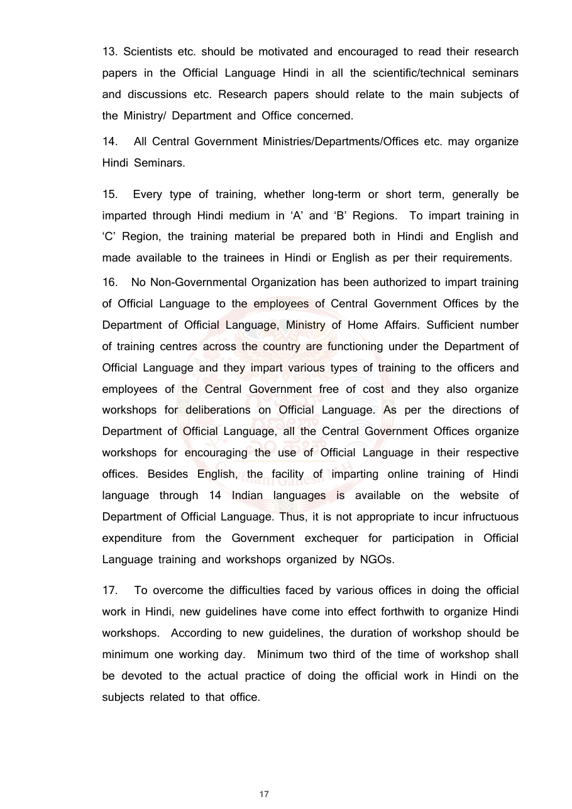

13. In all types of scientific/technical seminars and discussions, scientists etc. should be motivated and encouraged to read research papers in the official language Hindi. The said research paper should be related to the main topic of the concerned ministry/department and office etc.
14. All ministries/departments/offices etc. of the Central Government should organize Hindi seminars.
15. All types of training in areas 'A' and 'B', whether short term or long term, should generally be through Hindi medium. For training in area 'C', training material should be prepared in both Hindi and English languages and should be made available in Hindi or English as per the demand of the trainee.
16. No non-governmental organization has been authorized by the Department of Official Language, Ministry of Home Affairs to impart training in the official language to Central Government employees. Training centers under the Department of Official Language are already functioning across the country which provide various types of training free of cost to the officers and employees of the Central Government and organize workshops for discussion on the official language. As per the instructions of the Department of Official Language, workshops are organized by all the offices of the Central Government to promote the use of the official language in the respective offices. The facility of providing online training in Hindi language through 14 Indian languages in addition to English is available through 'Leela' official language on the website of the Department of Official Language. Therefore, it is not appropriate to spend unnecessary money from government funds to participate in official language training and workshops being organized by non-government organizations.
17. To overcome the difficulties faced in working in Hindi in various offices, new guidelines have been issued regarding organizing Hindi workshops. According to the new guidelines, the minimum duration of the workshop will be one working day. At least two-thirds of the time in the workshop should be spent in practicing working in Hindi on office related subjects.
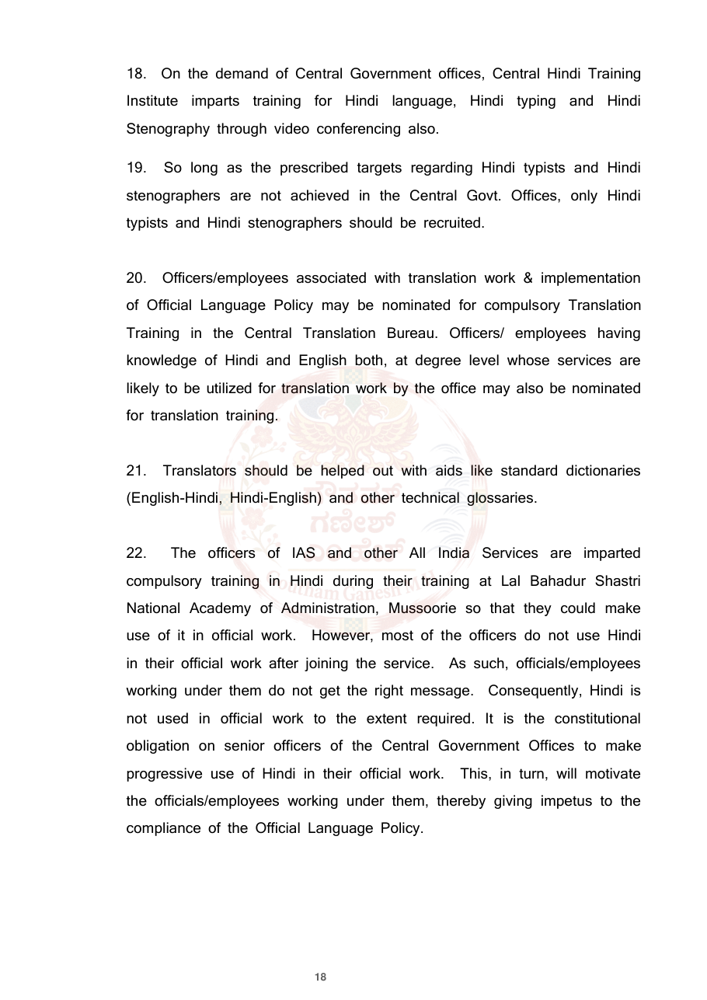

18. On the demand of Central Government offices, the Central Hindi Training Institute also provides training in Hindi language, Hindi typing and Hindi shorthand through video conferencing.
19. Until the set targets related to Hindi typists and Hindi stenographers are achieved in the Central Government offices, only Hindi typists and Hindi stenographers should be recruited in them.
20. All officers/employees associated with translation work and implementation of the official language policy should be nominated for mandatory translation training in the Central Translation Bureau. Such officers/employees can also be nominated for translation training, who have knowledge of both Hindi and English languages at graduate level and whose services can be utilized by the office for translation work.
21. Translators should be provided supporting material in the form of standard dictionaries (English-Hindi and Hindi-English) and other technical glossaries.
22. Hindi language training is given compulsorily to officers of the Indian Administrative Service and other All India Services during their training at the Lal Bahadur Shastri National Academy of Administration, Mussoorie, so that they can use it in official work. However, most of the officers do not use Hindi in official work after joining the service. This does not send the right message to the officers/employees working under them. As a result, Hindi is not used in government work in the desired quantity. It is the constitutional responsibility of senior officers of central government offices to use Hindi as much as possible in government work. This will motivate the officers/employees working under them and will speed up compliance with the official language policy.
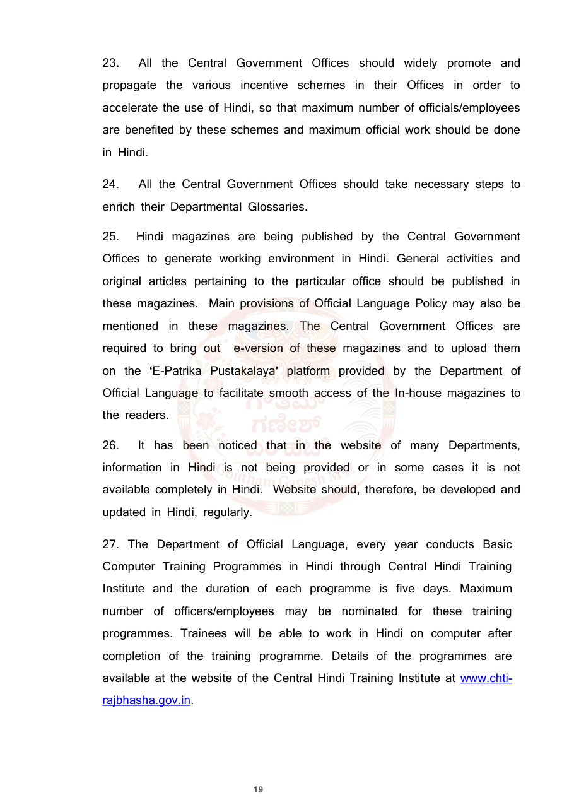

23. All the offices of the Central Government should give wide publicity to the various incentive schemes launched to promote the use of Hindi in their attached and subordinate offices so that more and more officers/employees can take advantage of these schemes and more and more work in government work is done in Hindi.
24. All offices of the Central Government should take necessary steps to enrich the vocabulary related to the subjects related to their responsibilities.
25. Central Government offices are publishing Hindi magazines to create a working environment in Hindi in their offices. Original articles related to the general activities of the office and the functioning of that office should be published in these magazines. Besides, the major provisions of the Official Language Policy must also be mentioned. Central Government offices are expected to prepare e-versions of these magazines and upload them on the platform “e-Patrika Library” provided by the Department of Official Language so that the home magazines can be easily accessed by the readers.
26. It has been observed that information is either not provided in Hindi on the websites of many departments or in some cases it is not completely available in Hindi. Therefore, get the website developed in Hindi and updated regularly.
27. Every year, the Department of Official Language organizes 5-day basic training programs for working in Hindi on computers through the Central Hindi Training Institute. Nominate as many officers/employees as possible in these training programmes. After completion of the training program, trainees will be able to work on computers in Hindi. Detailed information about the program is available on the website of Central Hindi Training Institute www.chti.rajbhasha.gov.in.

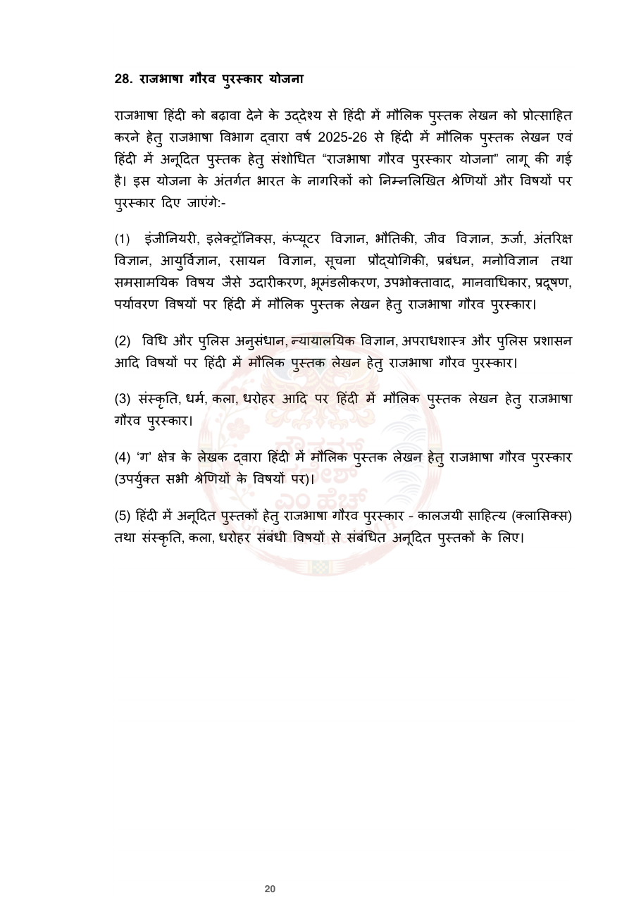
28. Official Language Gaurav Award Scheme
With the aim of promoting the official language Hindi, to encourage original book writing in Hindi, the Department of Official Language has implemented the revised “Official Language Gaurav Award Scheme” for original book writing in Hindi and translated books in Hindi from the year 2025-26. Under this scheme, awards will be given to the citizens of India on the following categories and subjects:-
(1) Official Language Gaurav Award for writing original books in Hindi on engineering, electronics, computer science, physics, biology, energy, space science, medical science, chemistry, information technology, management, psychology and contemporary subjects like liberalization, globalization, consumerism, human rights, pollution, environment.
(2) Official Language Gaurav Award for writing original books in Hindi on subjects like law and police research, forensic science, criminology and police administration etc.
(3) Official Language Gaurav Award for writing original books in Hindi on culture, religion, art, heritage etc.
(4) Official Language Gaurav Award for writing an original book in Hindi by a writer of 'C' region (on the subjects of all the above mentioned categories).
(5) Rajbhasha Gaurav Award for translated books in Hindi - for translated books related to timeless literature (classics) and subjects related to culture, art, heritage.


Award Details:
A. Rajbhasha Gaurav Award for writing an original book in Hindi on engineering, electronics, computer science, physics, biology, energy, space science, medical science, chemistry, information technology, management, psychology and contemporary subjects like liberalisation, globalization, consumerism, human rights, pollution: First Prize (one) - ₹ 2,00,000/- (Rupees two lakh), certificate and memento; Second Prize (One) – ₹1,25,000/- (Rupees One Lakh Twenty Five Thousand), Certificate and Memento; Third Prize (One) – ₹75,000/- (Seventy-five thousand rupees), certificate and memento; Incentive Award (Three) – ₹40,000/- (Forty Thousand Rupees), Incentive Certificate and Memento.
B. Rajbhasha Gaurav Award for writing original books in Hindi on subjects like law and police research, forensic science, criminology and police administration etc.: First Prize (one) - ₹ 1,50,000/- (Rupees one lakh fifty thousand), certificate and memento; Second Prize (One) – ₹1,00,000/- (Rupees One Lakh), certificate and memento; Incentive Award (two) – ₹40,000/- (Forty thousand rupees), incentive certificate and memento.
C. Rajbhasha Gaurav Award for writing an original book in Hindi on culture, religion, art, heritage etc.: First Prize (one) - ₹ 1,50,000/- (One lakh fifty thousand rupees), certificate and memento; Second Prize (One) – ₹1,00,000/- (Rupees One Lakh), certificate and memento; Incentive Award (two) – ₹40,000/- (Forty thousand rupees), incentive certificate and memento.
D. Rajbhasha Gaurav Award for writing an original book in Hindi by an author of 'C' language region (on the subjects of all the above mentioned categories): First Prize (one) - ₹ 1,50,000/- (One Lakh Fifty Thousand Rupees), certificate and memento; Second Prize (One) – ₹1,00,000/- (Rupees One Lakh), certificate and memento; Incentive Award (two) – ₹40,000/- (Forty thousand rupees), incentive certificate and memento.
E. Rajbhasha Gaurav Award for translated books in Hindi - For translated books related to classical literature (classics) and subjects related to culture, art, heritage: First Prize (one) - ₹ 1,50,000/- (One lakh fifty thousand rupees), certificate and memento; Second Prize (One) – ₹1,00,000/- (Rupees One Lakh), certificate and memento; Incentive Award (two) – ₹40,000/- (Forty thousand rupees), incentive certificate and memento.
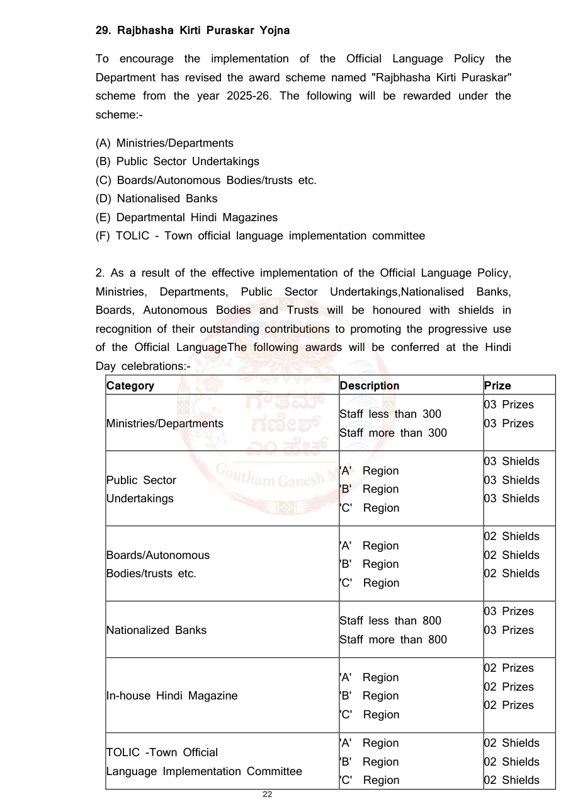
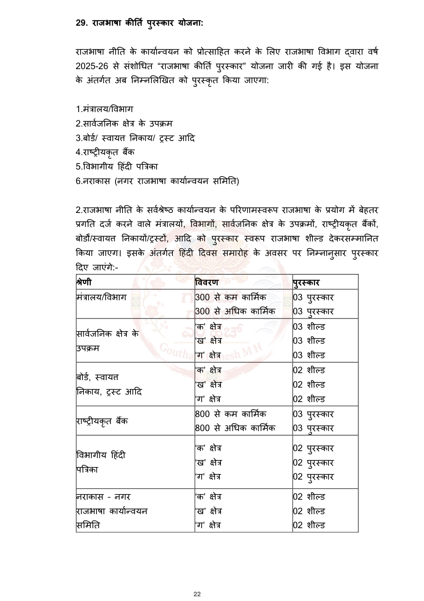
29. Official Language Kirti Award Scheme:
To encourage the implementation of the Official Language Policy, a revised “Rajbhasha Kirti Puraskar” scheme has been issued by the Department of Official Language from the year 2025-26. The following will now be rewarded under this scheme:
1. Ministries/Departments 2. Public Sector Undertakings 3. Boards/Autonomous Bodies/Trusts etc. 4. Nationalized Banks 5. Departmental Hindi Magazine 6. Narakas (City Official Language Implementation Committee)
2. Ministries, Departments, Public Sector Undertakings, Nationalized Banks, Boards/Autonomous Bodies/Trusts, etc., which have registered better progress in the use of the Official Language as a result of best implementation of the Official Language Policy, will be honored by giving them the Official Language Shield. Under this, the following awards will be given on the occasion of Hindi Day celebrations:-
Ministry/Department: Less than 300 personnel – 03 awards; More than 300 Personnel – 03 Awards.
Public Sector Undertakings: 'A' Sector - 03 Shields; 'B' Zone - 03 Shields; 'C' Zone - 03 Shields.
Boards, Autonomous Bodies, Trusts etc.: 'A' Zone - 02 Shields; 'B' Zone - 02 Shields; 'C' Zone - 02 Shields.
Nationalized Banks: Less than 800 Personnel – 03 Awards; More than 800 Personnel – 03 Awards.
Departmental Hindi Magazine: 'A' Zone - 02 Awards; 'B' Zone - 02 Awards; 'C' Region - 02 Awards.
Narakas - City Official Language Implementation Committee: 'A' Zone - 02 Shields; 'B' Zone - 02 Shields; 'C' Zone - 02 Shields.


30. The Department of Official Language has provided links to various institutions on its website through which the terminology of these institutions can be seen. In this regard, if any of the offices have prepared their own terminology then they should share it with the Department of Official Language so that other offices can also benefit.
31. Hindi translations of commonly used sentences in English have been given under the title “e-Saral Hindi Vyakkosh” on the website of the Department of Official Language, using which officers can easily write general comments on files in Hindi.
32. International treaties and agreements should be compulsorily prepared in both Hindi and English languages. Authentic translations of treaties and agreements executed in foreign countries should be prepared and kept on file for record.
33. In non-Hindi states, regional languages, Hindi and English, in that order, should be used for boards, sign boards, name plates and direction indicators.
34. Good and appropriate space to sit in the office and other necessary facilities should also be provided to the officers/employees doing work related to the official language Hindi, including training and workshops, so that they can perform their responsibilities properly.
35. We should emphasize on the use of words prevalent in common life in our work so that common citizens can get information about government policies/programs in simple Hindi.
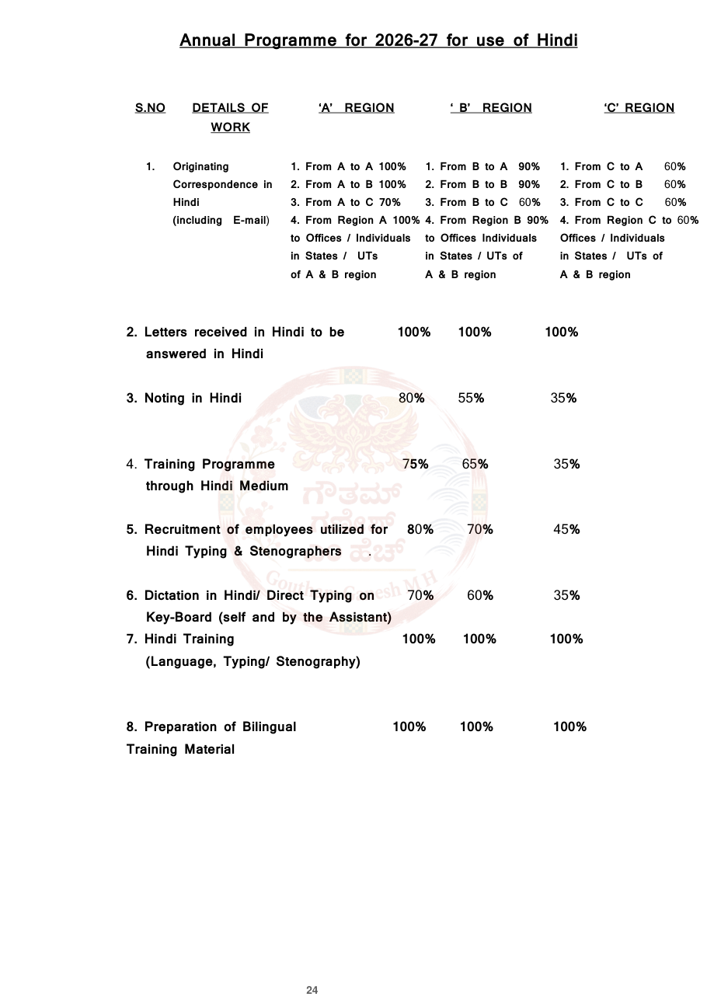

Annual program for the year 2026-27 for the use of Hindi
(Sr. No. - Work Description - 'A' Region / 'B' Region / 'C' Region)
1. Original correspondence in Hindi (including e-mail): 'A' Zone: 1. A zone to A zone 100%, 2. A zone to B zone 100%, 3. A zone to C zone 70%, 4. A zone to A and B zone state/UT office/individual 100%. 'B' Zone: 1. 90% from B zone to A zone, 2. 90% from B zone to B zone, 3. 60% from B zone to C zone, 4. 90% from B zone to State/UT office/individual of A and B zone. 'C' Zone: 1. 60% from C zone to A zone, 2. 60% from C zone to B zone, 3. 60% from C zone to C zone, 4. 60% from C zone to State/UT office/individual of A and B zone.
2. Letters received in Hindi to be replied to in Hindi: 100% / 100% / 100%.
3. Commenting in Hindi: 80% / 55% / 35%.
4. Training Program in Hindi medium: 75% / 65% / 35%.
5. Recruitment of Hindi typing staff and stenographers: 80% / 70% / 45%.
6. Dictation in Hindi/direct typing on keyboard (by self and assistant): 70% / 60% / 35%.
7. Hindi Training (Language, Typing, Stenography): 100% / 100% / 100%.
8. Preparing bilingual training materials: 100% / 100% / 100%.

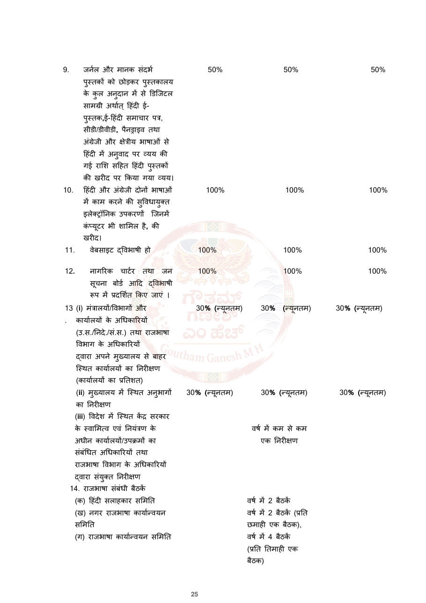
(Sr. No. - Work Description - 'A' Region / 'B' Region / 'C' Region)
9. Expenditure on purchase of Hindi books including digital content i.e. Hindi e-books, e-Hindi newspapers, CD/DVD, pendrives and the amount spent on translation from English and regional languages into Hindi out of the total grant of the library excluding journals and standard reference books: 50% / 50% / 50%.
10. Purchase of electronic equipment including computers having the facility of working in both Hindi and English languages: 100% / 100% / 100%.
11. Website should be bilingual: 100% / 100% / 100%.
12. Citizen's Charter and Public Information Boards etc. should be displayed in bilingual form: 100% / 100% / 100%.
13. (i) Inspection of offices located outside their headquarters by officers of Ministries/Departments and Offices (ADs/Directors/Rs.) and officers of the Department of Official Language (percentage of offices): 30% (minimum) / 30% (minimum) / 30% (minimum). (ii) Inspection of sections located at Headquarters: 30% (minimum) / 30% (minimum) / 30% (minimum). (iii) Joint inspection of offices/undertakings under the ownership and control of the Central Government situated abroad by the concerned officers and the officers of the Department of Official Language: At least one inspection in a year.
14. Meetings related to official language: (a) Hindi Advisory Committee: 2 meetings in a year. (b) City Official Language Implementation Committee: 2 meetings in a year (one meeting every half year). (c) Official Language Implementation Committee: 4 meetings in a year (one meeting per quarter).

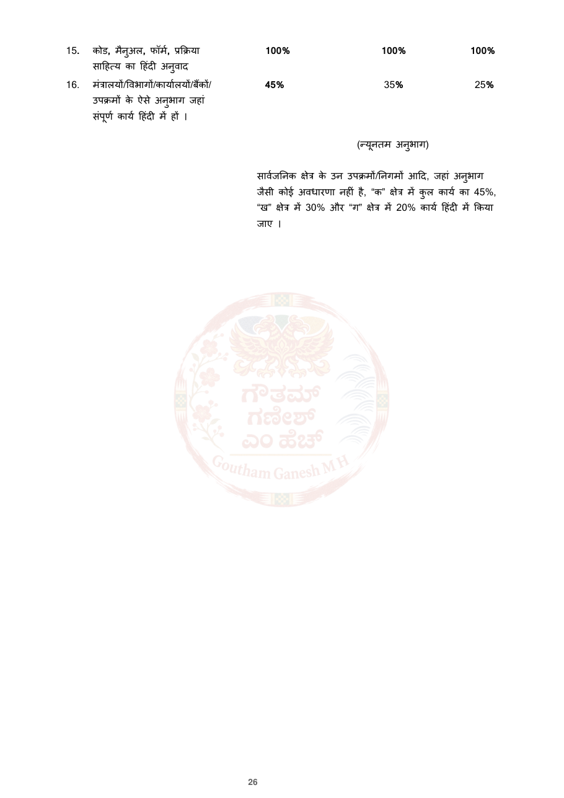
15. Hindi translation of code, manual, form, procedure literature: 'A' area 100% / 'B' area 100% / 'C' area 100%.
16. Sections of Ministries/Departments/Offices/Banks/Undertakings where entire work is in Hindi: 'A' Sector 45% / 'B' Sector 35% / 'C' Sector 25% (minimum section).
In those Public Sector Undertakings/Corporations etc., where there is no concept of section, 45% of the total work in area “A”, 30% in area “B” and 20% in area “C” should be done in Hindi.
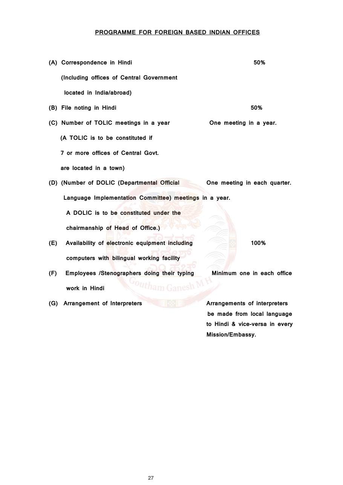

Program for Indian offices abroad
(a) Correspondence in Hindi (with Central Government offices located in India/foreign): 50%.
(b) Comments in Hindi on files: 50%.
(c) Number of meetings of NAARC during the year (NAARC should be constituted in case there are 7 or more offices of the Central Government in a city): One meeting in every year.
(d) Number of meetings of VIRAKAS (Departmental Official Language Implementation Committee) during the year (VIRAKAS should be constituted under the chairmanship of the Head of Office): One meeting in every quarter.
(e) Bilingual availability of all types of electronic devices including computers: 100%.
(f) Hindi typing staff/stenographers: At least one in each office.
(g) Arrangement of interpreters: Interpreters should be arranged in every mission/embassy for translation from local language to Hindi and from Hindi to local language.

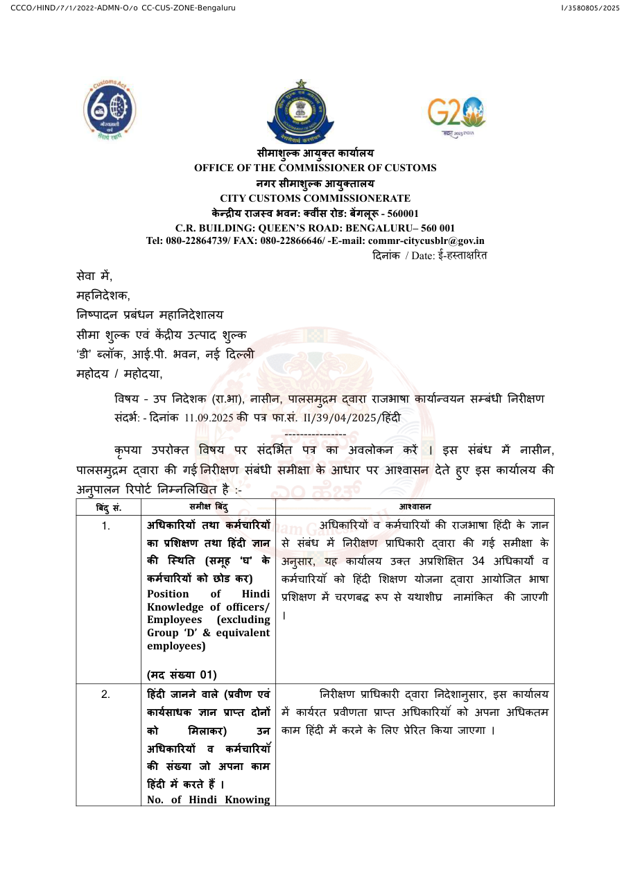
To, Director General, Directorate General of Performance Management, Customs and Central Excise, 'D' Block, I.P. Bhavan, New Delhi
Sir/Madam,
Subject - Inspection regarding implementation of official language by Deputy Director (Official Language), NASIN, Palasamudram
Reference: Letter F.No. dated 11.09.2025. II/39/04/2025/Hindi
Please review the letter referred to above on the subject. Giving assurance in this regard based on the inspection review conducted by NASIN, Palasamudram, the compliance report of this office is as follows:-
(Point No./Review Point/Assurance)
1. Training and status of Hindi knowledge of officers and employees (except Group 'D' employees) (item no. 01) Assurance: According to the review conducted by the inspecting authority regarding the knowledge of the official language Hindi of the officers and employees, this office will enroll the said untrained 34 officers and employees in the language training organized by the Hindi Teaching Scheme as soon as possible in a phased manner.
2. Number of officers and employees who know Hindi (including both proficient and working knowledge) and do their work in Hindi. (item number 02) Assurance: As directed by the inspecting authority, the proficient officers working in this office will be motivated to do maximum of their work in Hindi.
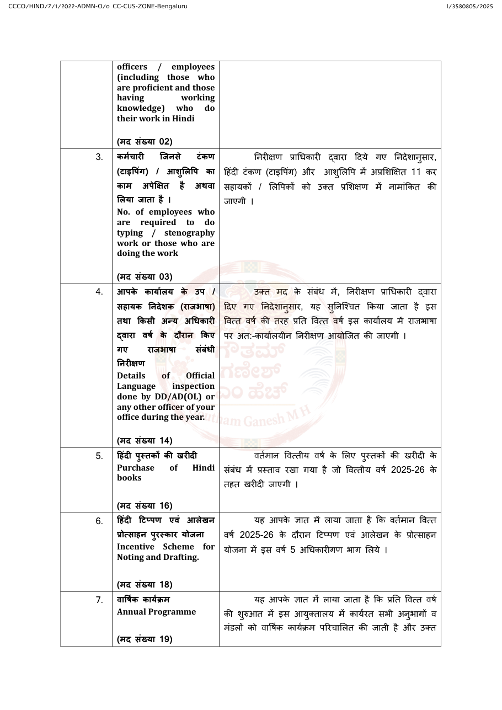
3. Employees from whom typing/stenography work is required or undertaken. (item number 03) Assurance: As directed by the inspecting authority, 11 tax assistants/clerks who are untrained in Hindi typing and shorthand will be enrolled in the said training.
4. Inspections related to Official Language conducted during the year by the Deputy/Assistant Director (Official Language) and any other officer of your office (Item No. 14) Assurance: In respect of the above item, as per the directions given by the inspecting authority, it is assured that inter-office inspection on Official Language will be conducted in this office every financial year like this financial year.
5. Purchase of Hindi books (item no. 16) Assurance: The proposal has been made regarding the purchase of books for the current financial year which will be purchased under the financial year 2025-26.
6. Hindi Noting and Drafting Incentive Award Scheme (Item No. 18) Assurance: It is brought to your knowledge that this year 5 officers participated in the Incentive Scheme of Noting and Drafting during the current financial year 2025-26.
7. Annual Program (Item No. 19) Assurance: It is brought to your knowledge that at the beginning of every financial year the Annual Program is circulated to all the Sections and Divisions functioning in this Commissionerate and the above
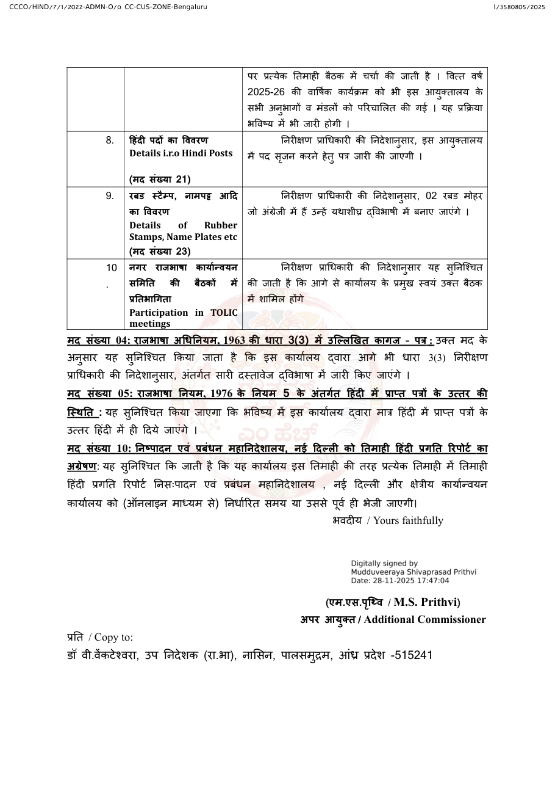
It is discussed in every quarterly meeting. The annual program for the financial year 2025-26 was also circulated to all the sections and divisions of this Commissionerate. This process will continue in future also.
8. Details of Hindi posts (item no. 21) Assurance: As per the instructions of the inspecting authority, a letter will be issued for creation of post in this Commissionerate.
9. Details of rubber stamps, name plates etc. (item no. 23) Assurance: As per the direction of the inspecting authority, 02 rubber stamps which are in English will be made bilingual as soon as possible.
10. Participation in the meetings of the City Official Language Implementation Committee Assurance: As per the instructions of the inspecting authority, it is assured that henceforth the Head of the Office himself will attend the said meeting.
Item No. 04: Documents mentioned in Section 3(3) of the Official Language Act, 1963: According to the above item, it is ensured that in future too, as per the instructions of the inspecting authority, all the documents under Section 3(3) will be issued in bilingual by this office.
Item No. 05: Status of reply to letters received in Hindi under Rule 5 of the Official Language Rules, 1976: It will be ensured that in future, all letters received in Hindi by this office will be replied to in Hindi only.
Item No. 10: Forwarding of Quarterly Hindi Progress Report to Directorate General of Execution & Management, New Delhi: It is ensured that this office will send Quarterly Hindi Progress Report to Directorate General of Execution & Management, New Delhi and Regional Implementation Office (through online mode) on or before the stipulated time in every quarter like this quarter.
Sincerely (M.S. Prithvi) Additional Commissioner
To: Dr. V. Venkateshwara, Deputy Director (Official Language), NASIN, Palasamudram, Andhra Pradesh - 515241
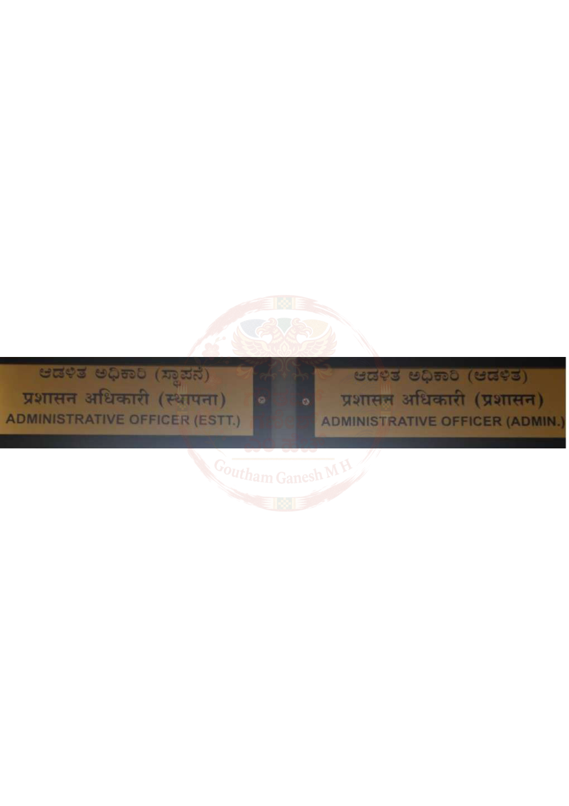
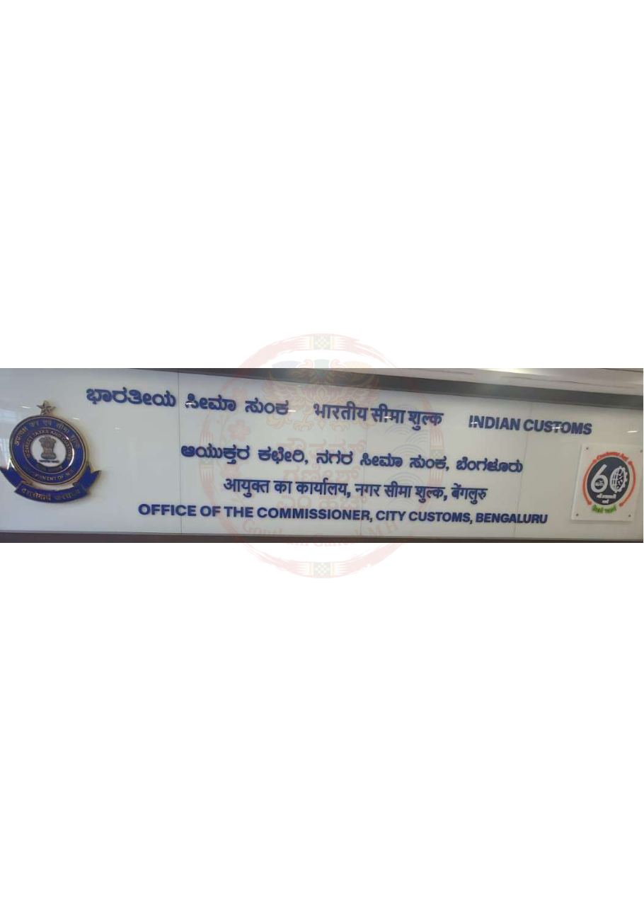
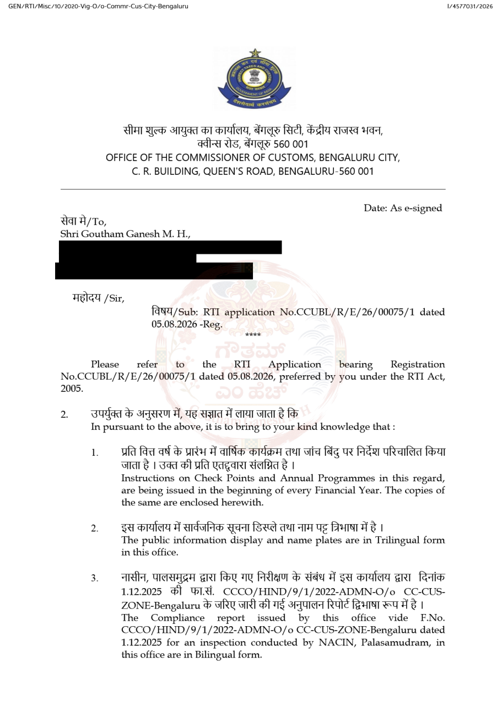
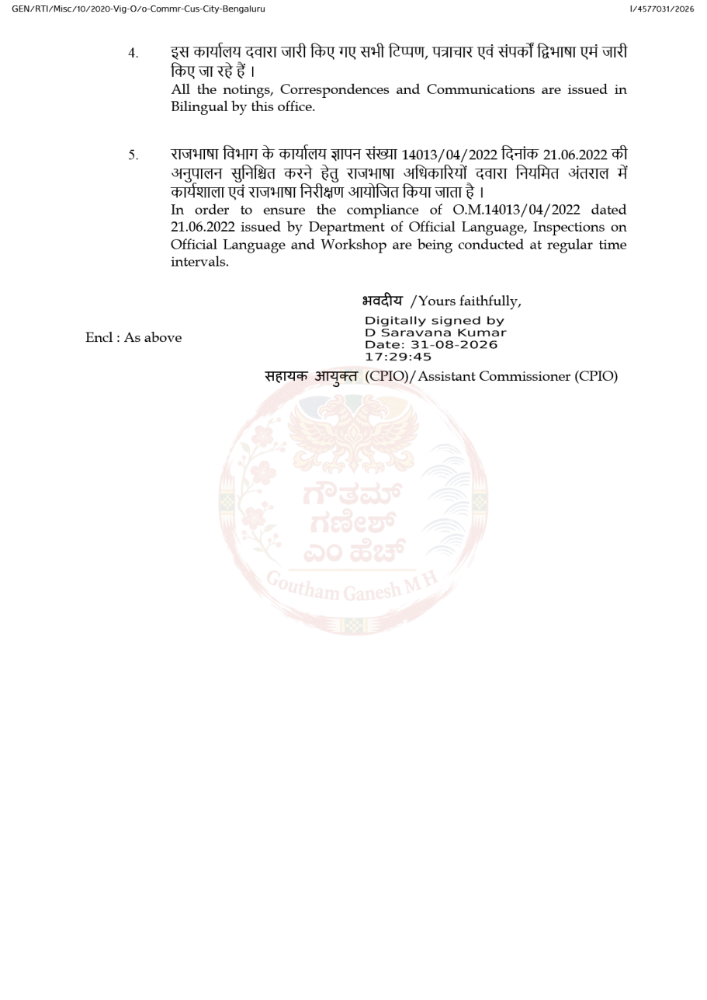